BayesPy – Bayesian Python¶
Introduction¶
BayesPy provides tools for Bayesian inference with Python. The user constructs a model as a Bayesian network, observes data and runs posterior inference. The goal is to provide a tool which is efficient, flexible and extendable enough for expert use but also accessible for more casual users.
Currently, only variational Bayesian inference for conjugate-exponential family (variational message passing) has been implemented. Future work includes variational approximations for other types of distributions and possibly other approximate inference methods such as expectation propagation, Laplace approximations, Markov chain Monte Carlo (MCMC) and other methods. Contributions are welcome.
Project information¶
Copyright (C) 2011-2017 Jaakko Luttinen and other contributors (see below)
BayesPy including the documentation is licensed under the MIT License. See LICENSE file for a text of the license or visit http://opensource.org/licenses/MIT.
| Latest release | |
| Documentation | http://bayespy.org |
| Repository | https://github.com/bayespy/bayespy.git |
| Bug reports | https://github.com/bayespy/bayespy/issues |
| Author | Jaakko Luttinen jaakko.luttinen@iki.fi |
| Chat |  |
| Mailing list | bayespy@googlegroups.com |
Continuous integration¶
| Branch | Test status | Test coverage | Documentation |
|---|---|---|---|
| master (stable) |  |
||
| develop (latest) |  |
Similar projects¶
VIBES (http://vibes.sourceforge.net/) allows variational inference to be performed automatically on a Bayesian network. It is implemented in Java and released under revised BSD license.
Bayes Blocks (http://research.ics.aalto.fi/bayes/software/) is a C++/Python implementation of the variational building block framework. The framework allows easy learning of a wide variety of models using variational Bayesian learning. It is available as free software under the GNU General Public License.
Infer.NET (http://research.microsoft.com/infernet/) is a .NET framework for machine learning. It provides message-passing algorithms and statistical routines for performing Bayesian inference. It is partly closed source and licensed for non-commercial use only.
PyMC (https://github.com/pymc-devs/pymc) provides MCMC methods in Python. It is released under the Academic Free License.
OpenBUGS (http://www.openbugs.info) is a software package for performing Bayesian inference using Gibbs sampling. It is released under the GNU General Public License.
Dimple (http://dimple.probprog.org/) provides Gibbs sampling, belief propagation and a few other inference algorithms for Matlab and Java. It is released under the Apache License.
Stan (http://mc-stan.org/) provides inference using MCMC with an interface for R and Python. It is released under the New BSD License.
PBNT - Python Bayesian Network Toolbox (http://pbnt.berlios.de/) is Bayesian network library in Python supporting static networks with discrete variables. There was no information about the license.
Contributors¶
The list of contributors:
- Jaakko Luttinen
- Hannu Hartikainen
- Deebul Nair
- Christopher Cramer
- Till Hoffmann
Each file or the git log can be used for more detailed information.
Version history¶
Version 0.5.11 (2017-09-26)¶
Fixed¶
- Handle scalar moments of the innovation vector properly in Gaussian Markov chain.
- Skip some failing image comparison unit tests. Image comparison tests will be deprecated at some point.
Version 0.5.9 (2017-09-02)¶
Added¶
- Support tqdm for monitoring the iteration progress (#105).
- Allow VB iteration without maximum number of iteration steps (#104).
- Add ellipse patch creation from covariance or precision (#103).
Version 0.5.8 (2017-05-13)¶
Fixed¶
- Implement random sampling for Poisson
- Update some old licensing information
Version 0.5.7 (2016-11-15)¶
Fixed¶
- Fix deterministic mappings in Mixture, which caused NaNs in results
Version 0.5.6 (2016-11-08)¶
Fixed¶
- Remove significant reshaping overhead in Cholesky computations in linalg module
- Fix minor plate multiplier issues
Version 0.5.5 (2016-11-04)¶
Fixed¶
- Fix critical plate multiplier bug in Take node. The bug caused basically all models with Take node to be incorrect.
- Fix ndim handling in GaussianGamma and Wishart
- Support lists and other array-convertible formats in several nodes
Version 0.5.4 (2016-10-27)¶
Added¶
- Add conversion from Gamma to scalar Wishart
- Implement message from GaussianMarkovChain to its input parent node
- Add generic unit test functions for messages and moments
Changed¶
- Require NumPy 1.10 or greater
Version 0.5.2 (2016-08-17)¶
Added¶
- Add a node method to obtain the VB lower bound terms that contain the node
Fixed¶
- Handle empty CLI argument lists in CLI argument parsing
- Fix handling of the two variables (Gaussian and Gamma) in GaussianGamma methods
- Fix minor bugs, including CGF in GaussianMarkovChain with inputs
Version 0.5.1 (2016-05-17)¶
Fixed¶
- Accept lists as number of multinomial trials
- Fix typo in handling concentration regularization shape
Version 0.5.0 (2016-05-04)¶
Added¶
- Implement the following new nodes:
- Take
- MultiMixture
- ConcatGaussian
- GaussianWishart
- GaussianGamma
- Choose
- Concentration
- MaximumLikelihood
- Function
- Add preliminary support for maximum likelihood estimation (implemented only for Wishart moments now)
- Support multiplying Wishart variable by a gamma variable (scale method in Wishart class)
- Support GaussianWishart and GaussianGamma in GaussianMarkovChain
- Support 1-p operation (complement) for beta variables
- Implement random sampling for Multinomial node
- Support ndim in many linalg functions and Gaussian-related nodes
- Add conjugate gradient support for Multinomial and Mixture
- Support monitoring of only some nodes when learning
- Add diag() method to Gamma node
- Add some examples as Jupyter notebooks
Changed¶
- Simplify GaussianARD mean parent handling
- Move documentation to Read the Docs
Fixed¶
- Fix an axis mapping bug in Mixture (#39)
- Fix NaN issue in Mixture with deterministic mappings (#66)
- Fix Dirichlet node parent validation
- Fix VB iteration when no data given (#67)
- Fix axis label support in Hinton plots (#64)
- Fix recursive node deletion
Version 0.4.1 (2015-11-02)¶
- Define extra dependencies needed to build the documentation
Version 0.4.0 (2015-11-02)¶
- Implement Add node for Gaussian nodes
- Raise error if attempting to install on Python 2
- Return both relative and absolute errors from numerical gradient checking
- Add nose plugin to filter unit test warnings appropriately
Version 0.3.9 (2015-10-16)¶
- Fix Gaussian ARD node sampling
Version 0.3.8 (2015-10-16)¶
- Fix Gaussian node sampling
Version 0.3.7 (2015-09-23)¶
- Enable keyword arguments when plotting via the inference engine
- Add initial support for logging
Version 0.3.6 (2015-08-12)¶
- Add maximum likelihood node for the shape parameter of Gamma
- Fix Hinton diagrams for 1-D and 0-D Gaussians
- Fix autosave interval counter
- Fix bugs in constant nodes
Version 0.3.5 (2015-06-09)¶
- Fix indexing bug in VB optimization (not VB-EM)
- Fix demos
Version 0.3.4 (2015-06-09)¶
- Fix computation of probability density of Dirichlet nodes
- Use unit tests for all code snippets in docstrings and documentation
Version 0.3.3 (2015-06-05)¶
- Change license to the MIT license
- Improve SumMultiply efficiency
- Hinton diagrams for gamma variables
- Possible to load only nodes from HDF5 results
Version 0.3.2 (2015-03-16)¶
- Concatenate node added
- Unit tests for plotting fixed
Version 0.3.1 (2015-03-12)¶
- Gaussian mixture 2D plotting improvements
- Covariance matrix sampling improvements
- Minor documentation fixes
Version 0.3 (2015-03-05)¶
- Add gradient-based optimization methods (Riemannian/natural gradient or normal)
- Add collapsed inference
- Add the pattern search method
- Add deterministic annealing
- Add stochastic variational inference
- Add optional input signals to Gaussian Markov chains
- Add unit tests for plotting functions (by Hannu Hartikainen)
- Add printing support to nodes
- Drop Python 3.2 support
Version 0.2.3 (2014-12-03)¶
- Fix matplotlib compatibility broken by recent changes in matplotlib
- Add random sampling for Binomial and Bernoulli nodes
- Fix minor bugs, for instance, in plot module
Version 0.2.2 (2014-11-01)¶
- Fix normalization of categorical Markov chain probabilities (fixes HMM demo)
- Fix initialization from parameter values
Version 0.2.1 (2014-09-30)¶
- Add workaround for matplotlib 1.4.0 bug related to interactive mode which affected monitoring
- Fix bugs in Hinton diagrams for Gaussian variables
Version 0.2 (2014-08-06)¶
- Added all remaining common distributions: Bernoulli, binomial, multinomial, Poisson, beta, exponential.
- Added Gaussian arrays (not just scalars or vectors).
- Added Gaussian Markov chains with time-varying or swithing dynamics.
- Added discrete Markov chains (enabling hidden Markov models).
- Added joint Gaussian-Wishart and Gaussian-gamma nodes.
- Added deterministic gating node.
- Added deterministic general sum-product node.
- Added parameter expansion for Gaussian arrays and time-varying/switching Gaussian Markov chains.
- Added new plotting functions: pdf, Hinton diagram.
- Added monitoring of posterior distributions during iteration.
- Finished documentation and added API.
Version 0.1 (2013-07-25)¶
- Added variational message passing inference engine.
- Added the following common distributions: Gaussian vector, gamma, Wishart, Dirichlet, categorical.
- Added Gaussian Markov chain.
- Added parameter expansion for Gaussian vectors and Gaussian Markov chain.
- Added stochastic mixture node.
- Added deterministic dot product node.
- Created preliminary version of the documentation.
User guide¶
Installation¶
BayesPy is a Python 3 package and it can be installed from PyPI or the latest development version from GitHub. The instructions below explain how to set up the system by installing required packages, how to install BayesPy and how to compile this documentation yourself. However, if these instructions contain errors or some relevant details are missing, please file a bug report at https://github.com/bayespy/bayespy/issues.
Installing BayesPy¶
BayesPy can be installed easily by using Pip if the system has been properly set up. If you have problems with the following methods, see the following section for some help on installing the requirements. For instance, a bug in recent versions of h5py and pip may require you to install some of the requirements manually.
For users¶
First, you may want to set up a virtual environment. Using virtual environment is optional but recommended. To create and activate a new virtual environment, run (in the folder in which you want to create the environment):
virtualenv -p python3 --system-site-packages ENV
source ENV/bin/activate
The latest release of BayesPy can be installed from PyPI simply as
pip install bayespy
If you want to install the latest development version of BayesPy, use GitHub instead:
pip install git+https://github.com/bayespy/bayespy.git@develop
For developers¶
If you want to install the development version of BayesPy in such a way that you can easily edit the package, follow these instructions. Get the git repository:
git clone https://github.com/bayespy/bayespy.git
cd bayespy
Create and activate a new virtual environment (optional but recommended):
virtualenv -p python3 --system-site-packages ENV
source ENV/bin/activate
Install BayesPy in editable mode:
pip install -e .
Checking installation¶
If you have problems installing BayesPy, read the next section for more details. It is recommended to run the unit tests in order to check that BayesPy is working properly. Thus, install Nose and run the unit tests:
pip install nose
nosetests bayespy
Installing requirements¶
BayesPy requires Python 3.3 (or later) and the following packages:
- NumPy (>=1.10.0),
- SciPy (>=0.13.0)
- matplotlib (>=1.2)
- h5py
Ideally, Pip should install the necessary requirements and a manual installation of these dependencies is not required. However, there are several reasons why the installation of these dependencies needs to be done manually in some cases. Thus, this section tries to give some details on how to set up your system. A proper installation of the dependencies for Python 3 can be a bit tricky and you may refer to http://www.scipy.org/install.html for more detailed instructions about the SciPy stack. Detailed instructions on installing recent SciPy stack for various platforms is out of the scope of these instructions, but we provide some general guidance here. There are basically three ways to install the dependencies:
Install a Python distribution which includes the packages. For Windows, Mac and Linux, there are several Python distributions which include all the necessary packages: http://www.scipy.org/install.html#scientific-python-distributions. For instance, you may try Anaconda or Enthought.
Install the packages using the system package manager. On Linux, the packages might be called something like
python-scipyorscipy. However, it is possible that these system packages are not recent enough for BayesPy.Install the packages using Pip:
pip install "distribute>=0.6.28" pip install "numpy>=1.10.0" "scipy>=0.13.0" "matplotlib>=1.2" h5pyThis also makes sure you have recent enough version of Distribute (required by Matplotlib). However, this installation method may require that the system has some libraries needed for compiling (e.g., C compiler, Python development files, BLAS/LAPACK). For instance, on Ubuntu (>= 12.10), you may install the required system libraries for each package as:
sudo apt-get build-dep python3-numpy sudo apt-get build-dep python3-scipy sudo apt-get build-dep python3-matplotlib sudo apt-get build-dep python-h5pyThen installation using Pip should work.
Compiling documentation¶
This documentation can be found at http://bayespy.org/ in HTML and PDF formats.
The documentation source files are also readable as such in reStructuredText
format in doc/source/ directory. It is possible to compile the
documentation into HTML or PDF yourself. In order to compile the documentation,
Sphinx is required and a few extensions for it. Those can be installed as:
pip install "sphinx>=1.2.3" sphinxcontrib-tikz sphinxcontrib-bayesnet sphinxcontrib-bibtex "numpydoc>=0.5"
Or you can simply install BayesPy with doc extra, which will take care of
installing the required dependencies:
pip install bayespy[doc]
In order to visualize graphical models in HTML, you need to have ImageMagick
or Netpbm installed. The documentation can be compiled to HTML and PDF by
running the following commands in the doc directory:
make html
make latexpdf
You can also run doctest to test code snippets in the documentation:
make doctest
or in the docstrings:
nosetests --with-doctest --doctest-options="+ELLIPSIS" bayespy
Quick start guide¶
This short guide shows the key steps in using BayesPy for variational Bayesian inference by applying BayesPy to a simple problem. The key steps in using BayesPy are the following:
- Construct the model
- Observe some of the variables by providing the data in a proper format
- Run variational Bayesian inference
- Examine the resulting posterior approximation
To demonstrate BayesPy, we’ll consider a very simple problem: we have a set of observations from a Gaussian distribution with unknown mean and variance, and we want to learn these parameters. In this case, we do not use any real-world data but generate some artificial data. The dataset consists of ten samples from a Gaussian distribution with mean 5 and standard deviation 10. This dataset can be generated with NumPy as follows:
>>> import numpy as np
>>> data = np.random.normal(5, 10, size=(10,))
Constructing the model¶
Now, given this data we would like to estimate the mean and the standard deviation as if we didn’t know their values. The model can be defined as follows:
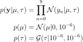
where  is the Gaussian distribution parameterized by
its mean and precision (i.e., inverse variance), and 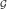
is the gamma distribution parameterized by its shape and rate
parameters. Note that we have given quite uninformative priors for the
variables
is the Gaussian distribution parameterized by
its mean and precision (i.e., inverse variance), and 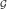
is the gamma distribution parameterized by its shape and rate
parameters. Note that we have given quite uninformative priors for the
variables  and
and  . This simple model can also be
shown as a directed factor graph:
. This simple model can also be
shown as a directed factor graph:
![% tikzlibrary.code.tex
%
% Copyright 2010-2011 by Laura Dietz
% Copyright 2012 by Jaakko Luttinen
%
% This file may be distributed and/or modified
%
% 1. under the LaTeX Project Public License and/or
% 2. under the GNU General Public License.
%
% See the files LICENSE_LPPL and LICENSE_GPL for more details.
% Load other libraries
\usetikzlibrary{shapes}
\usetikzlibrary{fit}
\usetikzlibrary{chains}
\usetikzlibrary{arrows}
% Latent node
\tikzstyle{latent} = [circle,fill=white,draw=black,inner sep=1pt,
minimum size=20pt, font=\fontsize{10}{10}\selectfont, node distance=1]
% Observed node
\tikzstyle{obs} = [latent,fill=gray!25]
% Constant node
\tikzstyle{const} = [rectangle, inner sep=0pt, node distance=1]
% Factor node
\tikzstyle{factor} = [rectangle, fill=black,minimum size=5pt, inner
sep=0pt, node distance=0.4]
% Deterministic node
\tikzstyle{det} = [latent, diamond]
% Plate node
\tikzstyle{plate} = [draw, rectangle, rounded corners, fit=#1]
% Invisible wrapper node
\tikzstyle{wrap} = [inner sep=0pt, fit=#1]
% Gate
\tikzstyle{gate} = [draw, rectangle, dashed, fit=#1]
% Caption node
\tikzstyle{caption} = [font=\footnotesize, node distance=0] %
\tikzstyle{plate caption} = [caption, node distance=0, inner sep=0pt,
below left=5pt and 0pt of #1.south east] %
\tikzstyle{factor caption} = [caption] %
\tikzstyle{every label} += [caption] %
\tikzset{>={triangle 45}}
%\pgfdeclarelayer{b}
%\pgfdeclarelayer{f}
%\pgfsetlayers{b,main,f}
% \factoredge [options] {inputs} {factors} {outputs}
\newcommand{\factoredge}[4][]{ %
% Connect all nodes #2 to all nodes #4 via all factors #3.
\foreach \f in {#3} { %
\foreach \x in {#2} { %
\draw[-,#1] (\x) edge[-] (\f) ; %
} ;
\foreach \y in {#4} { %
\draw[->,#1] (\f) -- (\y) ; %
} ;
} ;
}
% \edge [options] {inputs} {outputs}
\newcommand{\edge}[3][]{ %
% Connect all nodes #2 to all nodes #3.
\foreach \x in {#2} { %
\foreach \y in {#3} { %
\draw[->,#1] (\x) -- (\y) ;%
} ;
} ;
}
% \factor [options] {name} {caption} {inputs} {outputs}
\newcommand{\factor}[5][]{ %
% Draw the factor node. Use alias to allow empty names.
\node[factor, label={[name=#2-caption]#3}, name=#2, #1,
alias=#2-alias] {} ; %
% Connect all inputs to outputs via this factor
\factoredge {#4} {#2-alias} {#5} ; %
}
% \plate [options] {name} {fitlist} {caption}
\newcommand{\plate}[4][]{ %
\node[wrap=#3] (#2-wrap) {}; %
\node[plate caption=#2-wrap] (#2-caption) {#4}; %
\node[plate=(#2-wrap)(#2-caption), #1] (#2) {}; %
}
% \gate [options] {name} {fitlist} {inputs}
\newcommand{\gate}[4][]{ %
\node[gate=#3, name=#2, #1, alias=#2-alias] {}; %
\foreach \x in {#4} { %
\draw [-*,thick] (\x) -- (#2-alias); %
} ;%
}
% \vgate {name} {fitlist-left} {caption-left} {fitlist-right}
% {caption-right} {inputs}
\newcommand{\vgate}[6]{ %
% Wrap the left and right parts
\node[wrap=#2] (#1-left) {}; %
\node[wrap=#4] (#1-right) {}; %
% Draw the gate
\node[gate=(#1-left)(#1-right)] (#1) {}; %
% Add captions
\node[caption, below left=of #1.north ] (#1-left-caption)
{#3}; %
\node[caption, below right=of #1.north ] (#1-right-caption)
{#5}; %
% Draw middle separation
\draw [-, dashed] (#1.north) -- (#1.south); %
% Draw inputs
\foreach \x in {#6} { %
\draw [-*,thick] (\x) -- (#1); %
} ;%
}
% \hgate {name} {fitlist-top} {caption-top} {fitlist-bottom}
% {caption-bottom} {inputs}
\newcommand{\hgate}[6]{ %
% Wrap the left and right parts
\node[wrap=#2] (#1-top) {}; %
\node[wrap=#4] (#1-bottom) {}; %
% Draw the gate
\node[gate=(#1-top)(#1-bottom)] (#1) {}; %
% Add captions
\node[caption, above right=of #1.west ] (#1-top-caption)
{#3}; %
\node[caption, below right=of #1.west ] (#1-bottom-caption)
{#5}; %
% Draw middle separation
\draw [-, dashed] (#1.west) -- (#1.east); %
% Draw inputs
\foreach \x in {#6} { %
\draw [-*,thick] (\x) -- (#1); %
} ;%
}
\node[obs] (y) {$y_n$} ;
\node[latent, above left=1.5 and 0.5 of y] (mu) {$\mu$} ;
\node[latent, above right=1.5 and 0.5 of y] (tau) {$\tau$} ;
\factor[above=of mu] {mu-f} {left:$\mathcal{N}$} {} {mu} ;
\factor[above=of tau] {tau-f} {left:$\mathcal{G}$} {} {tau} ;
\factor[above=of y] {y-f} {left:$\mathcal{N}$} {mu,tau} {y};
\plate {} {(y)(y-f)(y-f-caption)} {$n=0,\ldots,9$} ;](_images/tikz-57bc0c88a2974f4c1e2335fe9edb88ff2efdf970.png)
Directed factor graph of the example model.
This model can be constructed in BayesPy as follows:
>>> from bayespy.nodes import GaussianARD, Gamma
>>> mu = GaussianARD(0, 1e-6)
>>> tau = Gamma(1e-6, 1e-6)
>>> y = GaussianARD(mu, tau, plates=(10,))
This is quite self-explanatory given the model definitions above. We have used
two types of nodes GaussianARD and Gamma to represent Gaussian
and gamma distributions, respectively. There are much more distributions in
bayespy.nodes so you can construct quite complex conjugate exponential
family models. The node y uses keyword argument plates to define
the plates  .
.
Performing inference¶
Now that we have created the model, we can provide our data by setting
y as observed:
>>> y.observe(data)
Next we want to estimate the posterior distribution. In principle, we could use different inference engines (e.g., MCMC or EP) but currently only variational Bayesian (VB) engine is implemented. The engine is initialized by giving all the nodes of the model:
>>> from bayespy.inference import VB
>>> Q = VB(mu, tau, y)
The inference algorithm can be run as long as wanted (max. 20 iterations in this case):
>>> Q.update(repeat=20)
Iteration 1: loglike=-6.020956e+01 (... seconds)
Iteration 2: loglike=-5.820527e+01 (... seconds)
Iteration 3: loglike=-5.820290e+01 (... seconds)
Iteration 4: loglike=-5.820288e+01 (... seconds)
Converged at iteration 4.
Now the algorithm converged after four iterations, before the requested 20 iterations. VB approximates the true posterior 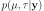 with a distribution which factorizes with respect to the nodes: 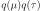.
Examining posterior approximation¶
The resulting approximate posterior distributions 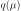 and 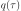 can be examined, for instance, by plotting the marginal probability density functions:
>>> import bayespy.plot as bpplt
>>> bpplt.pyplot.subplot(2, 1, 1)
<matplotlib.axes...AxesSubplot object at 0x...>
>>> bpplt.pdf(mu, np.linspace(-10, 20, num=100), color='k', name=r'\mu')
[<matplotlib.lines.Line2D object at 0x...>]
>>> bpplt.pyplot.subplot(2, 1, 2)
<matplotlib.axes...AxesSubplot object at 0x...>
>>> bpplt.pdf(tau, np.linspace(1e-6, 0.08, num=100), color='k', name=r'\tau')
[<matplotlib.lines.Line2D object at 0x...>]
>>> bpplt.pyplot.tight_layout()
>>> bpplt.pyplot.show()
(Source code, png, hires.png, pdf)

This example was a very simple introduction to using BayesPy. The model can be much more complex and each phase contains more options to give the user more control over the inference. The following sections give more details about the phases.
Constructing the model¶
In BayesPy, the model is constructed by creating nodes which form a directed network. There are two types of nodes: stochastic and deterministic. A stochastic node corresponds to a random variable (or a set of random variables) from a specific probability distribution. A deterministic node corresponds to a deterministic function of its parents. For a list of built-in nodes, see the User API.
Creating nodes¶
Creating a node is basically like writing the conditional prior distribution of
the variable in Python. The node is constructed by giving the parent nodes,
that is, the conditioning variables as arguments. The number of parents and
their meaning depend on the node. For instance, a Gaussian node is
created by giving the mean vector and the precision matrix. These parents can be
constant numerical arrays if they are known:
>>> from bayespy.nodes import Gaussian
>>> X = Gaussian([2, 5], [[1.0, 0.3], [0.3, 1.0]])
or other nodes if they are unknown and given prior distributions:
>>> from bayespy.nodes import Gaussian, Wishart
>>> mu = Gaussian([0, 0], [[1e-6, 0],[0, 1e-6]])
>>> Lambda = Wishart(2, [[1, 0], [0, 1]])
>>> X = Gaussian(mu, Lambda)
Nodes can also be named by providing name keyword argument:
>>> X = Gaussian(mu, Lambda, name='x')
The name may be useful when referring to the node using an inference engine.
For the parent nodes, there are two main restrictions: non-constant parent nodes must be conjugate and the parent nodes must be mutually independent in the posterior approximation.
Conjugacy of the parents¶
In Bayesian framework in general, one can give quite arbitrary probability
distributions for variables. However, one often uses distributions that are easy
to handle in practice. Quite often this means that the parents are given
conjugate priors. This is also one of the limitations in BayesPy: only conjugate
family prior distributions are accepted currently. Thus, although in principle
one could give, for instance, gamma prior for the mean parameter mu, only
Gaussian-family distributions are accepted because of the conjugacy. If the
parent is not of a proper type, an error is raised. This conjugacy is checked
automatically by BayesPy and NoConverterError is raised if a parent cannot
be interpreted as being from a conjugate distribution.
Independence of the parents¶
Another a bit rarely encountered limitation is that the parents must be mutually independent (in the posterior factorization). Thus, a node cannot have the same stochastic node as several parents without intermediate stochastic nodes. For instance, the following leads to an error:
>>> from bayespy.nodes import Dot
>>> Y = Dot(X, X)
Traceback (most recent call last):
...
ValueError: Parent nodes are not independent
The error is raised because X is given as two parents for Y, and
obviously X is not independent of X in the posterior approximation. Even
if X is not given several times directly but there are some intermediate
deterministic nodes, an error is raised because the deterministic nodes depend
on their parents and thus the parents of Y would not be independent.
However, it is valid that a node is a parent of another node via several paths
if all the paths or all except one path has intermediate stochastic nodes. This
is valid because the intermediate stochastic nodes have independent posterior
approximations. Thus, for instance, the following construction does not raise
errors:
>>> from bayespy.nodes import Dot
>>> Z = Gaussian(X, [[1,0], [0,1]])
>>> Y = Dot(X, Z)
This works because there is now an intermediate stochastic node Z on the
other path from X node to Y node.
Effects of the nodes on inference¶
When constructing the network with nodes, the stochastic nodes actually define three important aspects:
- the prior probability distribution for the variables,
- the factorization of the posterior approximation,
- the functional form of the posterior approximation for the variables.
Prior probability distribution¶
First, the most intuitive feature of the nodes is that they define the prior
distribution. In the previous example, mu was a stochastic
GaussianARD node corresponding to from the normal
distribution, tau was a stochastic Gamma node corresponding to
from the gamma distribution, and y was a stochastic
GaussianARD node corresponding to 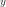 from the normal
distribution with mean and precision . If we denote the
set of all stochastic nodes by 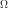, and by 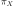 the set of
parents of a node 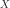, the model is defined as
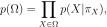
where nodes correspond to the terms 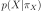.
Posterior factorization¶
Second, the nodes define the structure of the posterior approximation. The
variational Bayesian approximation factorizes with respect to nodes, that is,
each node corresponds to an independent probability distribution in the
posterior approximation. In the previous example, mu and tau were
separate nodes, thus the posterior approximation factorizes with respect to
them: . Thus, the posterior approximation can be written
as:
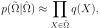
where 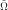 is the set of latent stochastic nodes and
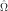 is the set of observed stochastic nodes. Sometimes one may
want to avoid the factorization between some variables. For this purpose, there
are some nodes which model several variables jointly without factorization. For
instance, GaussianGammaISO is a joint node for and
variables from the normal-gamma distribution and the posterior
approximation does not factorize between and , that is,
the posterior approximation is 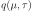.
Functional form of the posterior¶
Last, the nodes define the functional form of the posterior approximation.
Usually, the posterior approximation has the same or similar functional form as
the prior. For instance, Gamma uses gamma distribution to also
approximate the posterior distribution. Similarly, GaussianARD uses
Gaussian distribution for the posterior. However, the posterior approximation
of GaussianARD uses a full covariance matrix although the prior assumes
a diagonal covariance matrix. Thus, there can be slight differences in the
exact functional form of the posterior approximation but the rule of thumb is
that the functional form of the posterior approximation is the same as or more
general than the functional form of the prior.
Using plate notation¶
Defining plates¶
Stochastic nodes take the optional parameter plates, which can be used to
define plates of the variable. A plate defines the number of repetitions of a
set of variables. For instance, a set of random variables
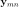 could be defined as
This can also be visualized as a graphical model:
![% tikzlibrary.code.tex
%
% Copyright 2010-2011 by Laura Dietz
% Copyright 2012 by Jaakko Luttinen
%
% This file may be distributed and/or modified
%
% 1. under the LaTeX Project Public License and/or
% 2. under the GNU General Public License.
%
% See the files LICENSE_LPPL and LICENSE_GPL for more details.
% Load other libraries
\usetikzlibrary{shapes}
\usetikzlibrary{fit}
\usetikzlibrary{chains}
\usetikzlibrary{arrows}
% Latent node
\tikzstyle{latent} = [circle,fill=white,draw=black,inner sep=1pt,
minimum size=20pt, font=\fontsize{10}{10}\selectfont, node distance=1]
% Observed node
\tikzstyle{obs} = [latent,fill=gray!25]
% Constant node
\tikzstyle{const} = [rectangle, inner sep=0pt, node distance=1]
% Factor node
\tikzstyle{factor} = [rectangle, fill=black,minimum size=5pt, inner
sep=0pt, node distance=0.4]
% Deterministic node
\tikzstyle{det} = [latent, diamond]
% Plate node
\tikzstyle{plate} = [draw, rectangle, rounded corners, fit=#1]
% Invisible wrapper node
\tikzstyle{wrap} = [inner sep=0pt, fit=#1]
% Gate
\tikzstyle{gate} = [draw, rectangle, dashed, fit=#1]
% Caption node
\tikzstyle{caption} = [font=\footnotesize, node distance=0] %
\tikzstyle{plate caption} = [caption, node distance=0, inner sep=0pt,
below left=5pt and 0pt of #1.south east] %
\tikzstyle{factor caption} = [caption] %
\tikzstyle{every label} += [caption] %
\tikzset{>={triangle 45}}
%\pgfdeclarelayer{b}
%\pgfdeclarelayer{f}
%\pgfsetlayers{b,main,f}
% \factoredge [options] {inputs} {factors} {outputs}
\newcommand{\factoredge}[4][]{ %
% Connect all nodes #2 to all nodes #4 via all factors #3.
\foreach \f in {#3} { %
\foreach \x in {#2} { %
\draw[-,#1] (\x) edge[-] (\f) ; %
} ;
\foreach \y in {#4} { %
\draw[->,#1] (\f) -- (\y) ; %
} ;
} ;
}
% \edge [options] {inputs} {outputs}
\newcommand{\edge}[3][]{ %
% Connect all nodes #2 to all nodes #3.
\foreach \x in {#2} { %
\foreach \y in {#3} { %
\draw[->,#1] (\x) -- (\y) ;%
} ;
} ;
}
% \factor [options] {name} {caption} {inputs} {outputs}
\newcommand{\factor}[5][]{ %
% Draw the factor node. Use alias to allow empty names.
\node[factor, label={[name=#2-caption]#3}, name=#2, #1,
alias=#2-alias] {} ; %
% Connect all inputs to outputs via this factor
\factoredge {#4} {#2-alias} {#5} ; %
}
% \plate [options] {name} {fitlist} {caption}
\newcommand{\plate}[4][]{ %
\node[wrap=#3] (#2-wrap) {}; %
\node[plate caption=#2-wrap] (#2-caption) {#4}; %
\node[plate=(#2-wrap)(#2-caption), #1] (#2) {}; %
}
% \gate [options] {name} {fitlist} {inputs}
\newcommand{\gate}[4][]{ %
\node[gate=#3, name=#2, #1, alias=#2-alias] {}; %
\foreach \x in {#4} { %
\draw [-*,thick] (\x) -- (#2-alias); %
} ;%
}
% \vgate {name} {fitlist-left} {caption-left} {fitlist-right}
% {caption-right} {inputs}
\newcommand{\vgate}[6]{ %
% Wrap the left and right parts
\node[wrap=#2] (#1-left) {}; %
\node[wrap=#4] (#1-right) {}; %
% Draw the gate
\node[gate=(#1-left)(#1-right)] (#1) {}; %
% Add captions
\node[caption, below left=of #1.north ] (#1-left-caption)
{#3}; %
\node[caption, below right=of #1.north ] (#1-right-caption)
{#5}; %
% Draw middle separation
\draw [-, dashed] (#1.north) -- (#1.south); %
% Draw inputs
\foreach \x in {#6} { %
\draw [-*,thick] (\x) -- (#1); %
} ;%
}
% \hgate {name} {fitlist-top} {caption-top} {fitlist-bottom}
% {caption-bottom} {inputs}
\newcommand{\hgate}[6]{ %
% Wrap the left and right parts
\node[wrap=#2] (#1-top) {}; %
\node[wrap=#4] (#1-bottom) {}; %
% Draw the gate
\node[gate=(#1-top)(#1-bottom)] (#1) {}; %
% Add captions
\node[caption, above right=of #1.west ] (#1-top-caption)
{#3}; %
\node[caption, below right=of #1.west ] (#1-bottom-caption)
{#5}; %
% Draw middle separation
\draw [-, dashed] (#1.west) -- (#1.east); %
% Draw inputs
\foreach \x in {#6} { %
\draw [-*,thick] (\x) -- (#1); %
} ;%
}
\node[latent] (y) {$\mathbf{y}_{mn}$} ;
\node[latent, above left=1.8 and 0.4 of y] (mu) {$\boldsymbol{\mu}$} ;
\node[latent, above right=1.8 and 0.4 of y] (Lambda) {$\mathbf{\Lambda}$} ;
\factor[above=of y] {y-f} {left:$\mathcal{N}$} {mu,Lambda} {y};
\plate {m-plate} {(y)(y-f)(y-f-caption)} {$m=0,\ldots,9$} ;
\plate {n-plate} {(m-plate)(m-plate-caption)} {$n=0,\ldots,29$} ;](_images/tikz-80a1db369be1f25b61ceacfff551dae2bdd331c3.png)
The variable has two plates: one for the index  and one for the
index
and one for the
index  . In BayesPy, this random variable can be constructed
as:
. In BayesPy, this random variable can be constructed
as:
>>> y = Gaussian(mu, Lambda, plates=(10,30))
Note
The plates are always given as a tuple of positive integers.
Plates also define indexing for the nodes, thus you can use simple NumPy-style slice indexing to obtain a subset of the plates:
>>> y_0 = y[0]
>>> y_0.plates
(30,)
>>> y_even = y[:,::2]
>>> y_even.plates
(10, 15)
>>> y_complex = y[:5, 10:20:5]
>>> y_complex.plates
(5, 2)
Note that this indexing is for the plates only, not for the random variable dimensions.
Sharing and broadcasting plates¶
Instead of having a common mean and precision matrix for all
, it is also possible to share plates with parents. For
instance, the mean could be different for each index and the precision
for each index :
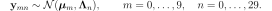
which has the following graphical representation:
![% tikzlibrary.code.tex
%
% Copyright 2010-2011 by Laura Dietz
% Copyright 2012 by Jaakko Luttinen
%
% This file may be distributed and/or modified
%
% 1. under the LaTeX Project Public License and/or
% 2. under the GNU General Public License.
%
% See the files LICENSE_LPPL and LICENSE_GPL for more details.
% Load other libraries
\usetikzlibrary{shapes}
\usetikzlibrary{fit}
\usetikzlibrary{chains}
\usetikzlibrary{arrows}
% Latent node
\tikzstyle{latent} = [circle,fill=white,draw=black,inner sep=1pt,
minimum size=20pt, font=\fontsize{10}{10}\selectfont, node distance=1]
% Observed node
\tikzstyle{obs} = [latent,fill=gray!25]
% Constant node
\tikzstyle{const} = [rectangle, inner sep=0pt, node distance=1]
% Factor node
\tikzstyle{factor} = [rectangle, fill=black,minimum size=5pt, inner
sep=0pt, node distance=0.4]
% Deterministic node
\tikzstyle{det} = [latent, diamond]
% Plate node
\tikzstyle{plate} = [draw, rectangle, rounded corners, fit=#1]
% Invisible wrapper node
\tikzstyle{wrap} = [inner sep=0pt, fit=#1]
% Gate
\tikzstyle{gate} = [draw, rectangle, dashed, fit=#1]
% Caption node
\tikzstyle{caption} = [font=\footnotesize, node distance=0] %
\tikzstyle{plate caption} = [caption, node distance=0, inner sep=0pt,
below left=5pt and 0pt of #1.south east] %
\tikzstyle{factor caption} = [caption] %
\tikzstyle{every label} += [caption] %
\tikzset{>={triangle 45}}
%\pgfdeclarelayer{b}
%\pgfdeclarelayer{f}
%\pgfsetlayers{b,main,f}
% \factoredge [options] {inputs} {factors} {outputs}
\newcommand{\factoredge}[4][]{ %
% Connect all nodes #2 to all nodes #4 via all factors #3.
\foreach \f in {#3} { %
\foreach \x in {#2} { %
\draw[-,#1] (\x) edge[-] (\f) ; %
} ;
\foreach \y in {#4} { %
\draw[->,#1] (\f) -- (\y) ; %
} ;
} ;
}
% \edge [options] {inputs} {outputs}
\newcommand{\edge}[3][]{ %
% Connect all nodes #2 to all nodes #3.
\foreach \x in {#2} { %
\foreach \y in {#3} { %
\draw[->,#1] (\x) -- (\y) ;%
} ;
} ;
}
% \factor [options] {name} {caption} {inputs} {outputs}
\newcommand{\factor}[5][]{ %
% Draw the factor node. Use alias to allow empty names.
\node[factor, label={[name=#2-caption]#3}, name=#2, #1,
alias=#2-alias] {} ; %
% Connect all inputs to outputs via this factor
\factoredge {#4} {#2-alias} {#5} ; %
}
% \plate [options] {name} {fitlist} {caption}
\newcommand{\plate}[4][]{ %
\node[wrap=#3] (#2-wrap) {}; %
\node[plate caption=#2-wrap] (#2-caption) {#4}; %
\node[plate=(#2-wrap)(#2-caption), #1] (#2) {}; %
}
% \gate [options] {name} {fitlist} {inputs}
\newcommand{\gate}[4][]{ %
\node[gate=#3, name=#2, #1, alias=#2-alias] {}; %
\foreach \x in {#4} { %
\draw [-*,thick] (\x) -- (#2-alias); %
} ;%
}
% \vgate {name} {fitlist-left} {caption-left} {fitlist-right}
% {caption-right} {inputs}
\newcommand{\vgate}[6]{ %
% Wrap the left and right parts
\node[wrap=#2] (#1-left) {}; %
\node[wrap=#4] (#1-right) {}; %
% Draw the gate
\node[gate=(#1-left)(#1-right)] (#1) {}; %
% Add captions
\node[caption, below left=of #1.north ] (#1-left-caption)
{#3}; %
\node[caption, below right=of #1.north ] (#1-right-caption)
{#5}; %
% Draw middle separation
\draw [-, dashed] (#1.north) -- (#1.south); %
% Draw inputs
\foreach \x in {#6} { %
\draw [-*,thick] (\x) -- (#1); %
} ;%
}
% \hgate {name} {fitlist-top} {caption-top} {fitlist-bottom}
% {caption-bottom} {inputs}
\newcommand{\hgate}[6]{ %
% Wrap the left and right parts
\node[wrap=#2] (#1-top) {}; %
\node[wrap=#4] (#1-bottom) {}; %
% Draw the gate
\node[gate=(#1-top)(#1-bottom)] (#1) {}; %
% Add captions
\node[caption, above right=of #1.west ] (#1-top-caption)
{#3}; %
\node[caption, below right=of #1.west ] (#1-bottom-caption)
{#5}; %
% Draw middle separation
\draw [-, dashed] (#1.west) -- (#1.east); %
% Draw inputs
\foreach \x in {#6} { %
\draw [-*,thick] (\x) -- (#1); %
} ;%
}
\node[latent] (y) {$\mathbf{y}_{mn}$} ;
\node[latent, above left=1 and 2 of y] (mu) {$\boldsymbol{\mu}_m$} ;
\node[latent, above right=1 and 1 of y] (Lambda) {$\mathbf{\Lambda}_n$} ;
\factor[above=of y] {y-f} {above:$\mathcal{N}$} {mu,Lambda} {y};
\plate {m-plate} {(mu)(y)(y-f)(y-f-caption)} {$m=0,\ldots,9$} ;
\plate {n-plate} {(Lambda)(y)(y-f)(y-f-caption)(m-plate-caption)(m-plate.north east)} {$n=0,\ldots,29$} ;](_images/tikz-97236981a2be663d10ade1ad85caa727621615db.png)
This can be constructed in BayesPy, for instance, as:
>>> from bayespy.nodes import Gaussian, Wishart
>>> mu = Gaussian([0, 0], [[1e-6, 0],[0, 1e-6]], plates=(10,1))
>>> Lambda = Wishart(2, [[1, 0], [0, 1]], plates=(1,30))
>>> X = Gaussian(mu, Lambda)
There are a few things to notice here. First, the plates are defined similarly
as shapes in NumPy, that is, they use similar broadcasting rules. For instance,
the plates (10,1) and (1,30) broadcast to (10,30). In fact, one
could use plates (10,1) and (30,) to get the broadcasted plates
(10,30) because broadcasting compares the plates from right to left starting
from the last axis. Second, X is not given plates keyword argument
because the default plates are the plates broadcasted from the parents and that
was what we wanted so it was not necessary to provide the keyword argument. If
we wanted, for instance, plates (20,10,30) for X, then we would have
needed to provide plates=(20,10,30).
The validity of the plates between a child and its parents is checked as follows. The plates are compared plate-wise starting from the last axis and working the way forward. A plate of the child is compatible with a plate of the parent if either of the following conditions is met:
- The two plates have equal size
- The parent has size 1 (or no plate)
Table below shows an example of compatible plates for a child node and its two parent nodes:
| node | plates | ||||||
|---|---|---|---|---|---|---|---|
| parent1 | 3 | 1 | 1 | 1 | 8 | 10 | |
| parent2 | 1 | 1 | 5 | 1 | 10 | ||
| child | 5 | 3 | 1 | 7 | 5 | 8 | 10 |
Plates in deterministic nodes¶
Note that plates can be defined explicitly only for stochastic nodes. For
deterministic nodes, the plates are defined implicitly by the plate broadcasting
rules from the parents. Deterministic nodes do not need more plates than this
because there is no randomness. The deterministic node would just have the same
value over the extra plates, but it is not necessary to do this explicitly
because the child nodes of the deterministic node can utilize broadcasting
anyway. Thus, there is no point in having extra plates in deterministic nodes,
and for this reason, deterministic nodes do not use plates keyword argument.
Plates in constants¶
It is useful to understand how the plates and the shape of a random variable are
connected. The shape of an array which contains all the plates of a random
variable is the concatenation of the plates and the shape of the variable. For
instance, consider a 2-dimensional Gaussian variable with plates (3,). If
you want the value of the constant mean vector and constant precision matrix to
vary between plates, they are given as (3,2)-shape and (3,2,2)-shape
arrays, respectively:
>>> import numpy as np
>>> mu = [ [0,0], [1,1], [2,2] ]
>>> Lambda = [ [[1.0, 0.0],
... [0.0, 1.0]],
... [[1.0, 0.9],
... [0.9, 1.0]],
... [[1.0, -0.3],
... [-0.3, 1.0]] ]
>>> X = Gaussian(mu, Lambda)
>>> np.shape(mu)
(3, 2)
>>> np.shape(Lambda)
(3, 2, 2)
>>> X.plates
(3,)
Thus, the leading axes of an array are the plate axes and the trailing axes are
the random variable axes. In the example above, the mean vector has plates
(3,) and shape (2,), and the precision matrix has plates (3,) and
shape (2,2).
Factorization of plates¶
It is important to undestand the independency structure the plates induce for the model. First, the repetitions defined by a plate are independent a priori given the parents. Second, the repetitions are independent in the posterior approximation, that is, the posterior approximation factorizes with respect to plates. Thus, the plates also have an effect on the independence structure of the posterior approximation, not only prior. If dependencies between a set of variables need to be handled, that set must be handled as a some kind of multi-dimensional variable.
Irregular plates¶
The handling of plates is not always as simple as described above. There are cases in which the plates of the parents do not map directly to the plates of the child node. The user API should mention such irregularities.
For instance, the parents of a mixture distribution have a plate which contains the different parameters for each cluster, but the variable from the mixture distribution does not have that plate:
>>> from bayespy.nodes import Gaussian, Wishart, Categorical, Mixture
>>> mu = Gaussian([[0], [0], [0]], [ [[1]], [[1]], [[1]] ])
>>> Lambda = Wishart(1, [ [[1]], [[1]], [[1]]])
>>> Z = Categorical([1/3, 1/3, 1/3], plates=(100,))
>>> X = Mixture(Z, Gaussian, mu, Lambda)
>>> mu.plates
(3,)
>>> Lambda.plates
(3,)
>>> Z.plates
(100,)
>>> X.plates
(100,)
The plates (3,) and (100,) should not broadcast according to the rules
mentioned above. However, when validating the plates, Mixture removes
the plate which corresponds to the clusters in mu and Lambda. Thus,
X has plates which are the result of broadcasting plates () and
(100,) which equals (100,).
Also, sometimes the plates of the parents may be mapped to the variable axes. For instance, an automatic relevance determination (ARD) prior for a Gaussian variable is constructed by giving the diagonal elements of the precision matrix (or tensor). The Gaussian variable itself can be a scalar, a vector, a matrix or a tensor. A set of five 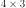 -dimensional Gaussian matrices with ARD prior is constructed as:
>>> from bayespy.nodes import GaussianARD, Gamma
>>> tau = Gamma(1, 1, plates=(5,4,3))
>>> X = GaussianARD(0, tau, shape=(4,3))
>>> tau.plates
(5, 4, 3)
>>> X.plates
(5,)
Note how the last two plate axes of tau are mapped to the variable axes of
X with shape (4,3) and the plates of X are obtained by taking the
remaining leading plate axes of tau.
Example model: Principal component analysis¶
Now, we’ll construct a bit more complex model which will be used in the following sections. The model is a probabilistic version of principal component analysis (PCA):
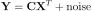
where 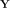 is  data matrix,
data matrix,  is
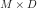 loading matrix,
is
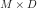 loading matrix,  is state
matrix, and noise is isotropic Gaussian. The dimensionality
is state
matrix, and noise is isotropic Gaussian. The dimensionality  is
usually assumed to be much smaller than
is
usually assumed to be much smaller than  and 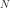.
and 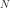.
A probabilistic formulation can be written as:

where we have given automatic relevance determination (ARD) prior for
. This can be visualized as a graphical model:
![% tikzlibrary.code.tex
%
% Copyright 2010-2011 by Laura Dietz
% Copyright 2012 by Jaakko Luttinen
%
% This file may be distributed and/or modified
%
% 1. under the LaTeX Project Public License and/or
% 2. under the GNU General Public License.
%
% See the files LICENSE_LPPL and LICENSE_GPL for more details.
% Load other libraries
\usetikzlibrary{shapes}
\usetikzlibrary{fit}
\usetikzlibrary{chains}
\usetikzlibrary{arrows}
% Latent node
\tikzstyle{latent} = [circle,fill=white,draw=black,inner sep=1pt,
minimum size=20pt, font=\fontsize{10}{10}\selectfont, node distance=1]
% Observed node
\tikzstyle{obs} = [latent,fill=gray!25]
% Constant node
\tikzstyle{const} = [rectangle, inner sep=0pt, node distance=1]
% Factor node
\tikzstyle{factor} = [rectangle, fill=black,minimum size=5pt, inner
sep=0pt, node distance=0.4]
% Deterministic node
\tikzstyle{det} = [latent, diamond]
% Plate node
\tikzstyle{plate} = [draw, rectangle, rounded corners, fit=#1]
% Invisible wrapper node
\tikzstyle{wrap} = [inner sep=0pt, fit=#1]
% Gate
\tikzstyle{gate} = [draw, rectangle, dashed, fit=#1]
% Caption node
\tikzstyle{caption} = [font=\footnotesize, node distance=0] %
\tikzstyle{plate caption} = [caption, node distance=0, inner sep=0pt,
below left=5pt and 0pt of #1.south east] %
\tikzstyle{factor caption} = [caption] %
\tikzstyle{every label} += [caption] %
\tikzset{>={triangle 45}}
%\pgfdeclarelayer{b}
%\pgfdeclarelayer{f}
%\pgfsetlayers{b,main,f}
% \factoredge [options] {inputs} {factors} {outputs}
\newcommand{\factoredge}[4][]{ %
% Connect all nodes #2 to all nodes #4 via all factors #3.
\foreach \f in {#3} { %
\foreach \x in {#2} { %
\draw[-,#1] (\x) edge[-] (\f) ; %
} ;
\foreach \y in {#4} { %
\draw[->,#1] (\f) -- (\y) ; %
} ;
} ;
}
% \edge [options] {inputs} {outputs}
\newcommand{\edge}[3][]{ %
% Connect all nodes #2 to all nodes #3.
\foreach \x in {#2} { %
\foreach \y in {#3} { %
\draw[->,#1] (\x) -- (\y) ;%
} ;
} ;
}
% \factor [options] {name} {caption} {inputs} {outputs}
\newcommand{\factor}[5][]{ %
% Draw the factor node. Use alias to allow empty names.
\node[factor, label={[name=#2-caption]#3}, name=#2, #1,
alias=#2-alias] {} ; %
% Connect all inputs to outputs via this factor
\factoredge {#4} {#2-alias} {#5} ; %
}
% \plate [options] {name} {fitlist} {caption}
\newcommand{\plate}[4][]{ %
\node[wrap=#3] (#2-wrap) {}; %
\node[plate caption=#2-wrap] (#2-caption) {#4}; %
\node[plate=(#2-wrap)(#2-caption), #1] (#2) {}; %
}
% \gate [options] {name} {fitlist} {inputs}
\newcommand{\gate}[4][]{ %
\node[gate=#3, name=#2, #1, alias=#2-alias] {}; %
\foreach \x in {#4} { %
\draw [-*,thick] (\x) -- (#2-alias); %
} ;%
}
% \vgate {name} {fitlist-left} {caption-left} {fitlist-right}
% {caption-right} {inputs}
\newcommand{\vgate}[6]{ %
% Wrap the left and right parts
\node[wrap=#2] (#1-left) {}; %
\node[wrap=#4] (#1-right) {}; %
% Draw the gate
\node[gate=(#1-left)(#1-right)] (#1) {}; %
% Add captions
\node[caption, below left=of #1.north ] (#1-left-caption)
{#3}; %
\node[caption, below right=of #1.north ] (#1-right-caption)
{#5}; %
% Draw middle separation
\draw [-, dashed] (#1.north) -- (#1.south); %
% Draw inputs
\foreach \x in {#6} { %
\draw [-*,thick] (\x) -- (#1); %
} ;%
}
% \hgate {name} {fitlist-top} {caption-top} {fitlist-bottom}
% {caption-bottom} {inputs}
\newcommand{\hgate}[6]{ %
% Wrap the left and right parts
\node[wrap=#2] (#1-top) {}; %
\node[wrap=#4] (#1-bottom) {}; %
% Draw the gate
\node[gate=(#1-top)(#1-bottom)] (#1) {}; %
% Add captions
\node[caption, above right=of #1.west ] (#1-top-caption)
{#3}; %
\node[caption, below right=of #1.west ] (#1-bottom-caption)
{#5}; %
% Draw middle separation
\draw [-, dashed] (#1.west) -- (#1.east); %
% Draw inputs
\foreach \x in {#6} { %
\draw [-*,thick] (\x) -- (#1); %
} ;%
}
\node[latent] (y) {$\mathbf{y}_{mn}$} ;
\node[det, above=of y] (dot) {dot} ;
\node[latent, right=2 of dot] (tau) {$\tau$} ;
\node[latent, above left=1 and 2 of dot] (C) {$c_{md}$} ;
\node[latent, above=of C] (alpha) {$\alpha_d$} ;
\node[latent, above right=1 and 1 of dot] (X) {$x_{nd}$} ;
\factor[above=of y] {y-f} {left:$\mathcal{N}$} {dot,tau} {y};
\factor[above=of C] {C-f} {left:$\mathcal{N}$} {alpha} {C};
\factor[above=of X] {X-f} {above:$\mathcal{N}$} {} {X};
\factor[above=of alpha] {alpha-f} {above:$\mathcal{G}$} {} {alpha};
\factor[above=of tau] {tau-f} {above:$\mathcal{G}$} {} {tau};
\edge {C,X} {dot};
\tikzstyle{plate caption} += [below left=0pt and 0pt of #1.north east] ;
\plate {d-plate} {(X)(X-f)(X-f-caption)(C)(C-f)(C-f-caption)(alpha)(alpha-f)(alpha-f-caption)} {$d=0,\ldots,2$} ;
\tikzstyle{plate caption} += [below left=5pt and 0pt of #1.south east] ;
\plate {m-plate} {(y)(y-f)(y-f-caption)(C)(C-f)(C-f-caption)(d-plate.south west)} {$m=0,\ldots,9$} ;
\plate {n-plate} {(y)(y-f)(y-f-caption)(X)(X-f)(X-f-caption)(m-plate-caption)(m-plate.north east)(d-plate.south east)} {$n=0,\ldots,99$} ;](_images/tikz-7c950fa428df90525eaecdf9647b397a4a3426b1.png)
Now, let us construct this model in BayesPy. First, we’ll define the dimensionality of the latent space in our model:
>>> D = 3
Then the prior for the latent states :
>>> X = GaussianARD(0, 1,
... shape=(D,),
... plates=(1,100),
... name='X')
Note that the shape of X is (D,), although the latent dimensions are
marked with a plate in the graphical model and they are conditionally
independent in the prior. However, we want to (and need to) model the posterior
dependency of the latent dimensions, thus we cannot factorize them, which would
happen if we used plates=(1,100,D) and shape=(). The first plate axis
with size 1 is given just for clarity.
The prior for the ARD parameters 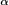 of the loading matrix:
>>> alpha = Gamma(1e-3, 1e-3,
... plates=(D,),
... name='alpha')
The prior for the loading matrix :
>>> C = GaussianARD(0, alpha,
... shape=(D,),
... plates=(10,1),
... name='C')
Again, note that the shape is the same as for X for the same reason. Also,
the plates of alpha, (D,), are mapped to the full shape of the node
C, (10,1,D), using standard broadcasting rules.
The dot product is just a deterministic node:
>>> F = Dot(C, X)
However, note that Dot requires that the input Gaussian nodes have the same
shape and that this shape has exactly one axis, that is, the variables are
vectors. This the reason why we used shape (D,) for X and C but
from a bit different perspective. The node computes the inner product of
-dimensional vectors resulting in plates (10,100) broadcasted from
the plates (1,100) and (10,1):
>>> F.plates
(10, 100)
The prior for the observation noise :
>>> tau = Gamma(1e-3, 1e-3, name='tau')
Finally, the observations are conditionally independent Gaussian scalars:
>>> Y = GaussianARD(F, tau, name='Y')
Now we have defined our model and the next step is to observe some data and to perform inference.
Performing inference¶
Approximation of the posterior distribution can be divided into several steps:
- Observe some nodes
- Choose the inference engine
- Initialize the posterior approximation
- Run the inference algorithm
In order to illustrate these steps, we’ll be using the PCA model constructed in the previous section.
Observing nodes¶
First, let us generate some toy data:
>>> c = np.random.randn(10, 2)
>>> x = np.random.randn(2, 100)
>>> data = np.dot(c, x) + 0.1*np.random.randn(10, 100)
The data is provided by simply calling observe method of a stochastic node:
>>> Y.observe(data)
It is important that the shape of the data array matches the plates and
shape of the node Y. For instance, if Y was Wishart node for
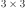 matrices with plates (5,1,10), the full shape of Y
would be (5,1,10,3,3). The data array should have this shape exactly,
that is, no broadcasting rules are applied.
Missing values¶
It is possible to mark missing values by providing a mask which is a boolean array:
>>> Y.observe(data, mask=[[True], [False], [False], [True], [True],
... [False], [True], [True], [True], [False]])
True means that the value is observed and False means that the value is
missing. The shape of the above mask is (10,1), which broadcasts to the
plates of Y, (10,100). Thus, the above mask means that the second, third,
sixth and tenth rows of the 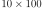 data matrix are missing.
The mask is applied to the plates, not to the data array directly. This means that it is not possible to observe a random variable partially, each repetition defined by the plates is either fully observed or fully missing. Thus, the mask is applied to the plates. It is often possible to circumvent this seemingly tight restriction by adding an observable child node which factorizes more.
The shape of the mask is broadcasted to plates using standard NumPy broadcasting
rules. So, if the variable has plates (5,1,10), the mask could have a shape
(), (1,), (1,1), (1,1,1), (10,), (1,10), (1,1,10),
(5,1,1) or (5,1,10). In order to speed up the inference, missing values
are automatically integrated out if they are not needed as latent variables to
child nodes. This leads to faster convergence and more accurate approximations.
Choosing the inference method¶
Inference methods can be found in bayespy.inference package. Currently,
only variational Bayesian approximation is implemented
(bayespy.inference.VB). The inference engine is constructed by giving
the stochastic nodes of the model.
>>> from bayespy.inference import VB
>>> Q = VB(Y, C, X, alpha, tau)
There is no need to give any deterministic nodes. Currently, the inference engine does not automatically search for stochastic parents and children, thus it is important that all stochastic nodes of the model are given. This should be made more robust in future versions.
A node of the model can be obtained by using the name of the node as a key:
>>> Q['X']
<bayespy.inference.vmp.nodes.gaussian.GaussianARD object at 0x...>
Note that the returned object is the same as the node object itself:
>>> Q['X'] is X
True
Thus, one may use the object X when it is available. However, if the model
and the inference engine are constructed in another function or module, the node
object may not be available directly and this feature becomes useful.
Initializing the posterior approximation¶
The inference engines give some initialization to the stochastic nodes by default. However, the inference algorithms can be sensitive to the initialization, thus it is sometimes necessary to have better control over the initialization. For VB, the following initialization methods are available:
initialize_from_prior: Use the current states of the parent nodes to update the node. This is the default initialization.initialize_from_parameters: Use the given parameter values for the distribution.initialize_from_value: Use the given value for the variable.initialize_from_random: Draw a random value for the variable. The random sample is drawn from the current state of the node’s distribution.
Note that initialize_from_value and initialize_from_random initialize
the distribution with a value of the variable instead of parameters of the
distribution. Thus, the distribution is actually a delta distribution with a
peak on the value after the initialization. This state of the distribution does
not have proper natural parameter values nor normalization, thus the VB lower
bound terms are np.nan for this initial state.
These initialization methods can be used to perform even a bit more complex initializations. For instance, a Gaussian distribution could be initialized with a random mean and variance 0.1. In our PCA model, this can be obtained by
>>> X.initialize_from_parameters(np.random.randn(1, 100, D), 10)
Note that the shape of the random mean is the sum of the plates (1, 100) and
the variable shape (D,). In addition, instead of variance,
GaussianARD uses precision as the second parameter, thus we initialized
the variance to 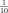. This random initialization is important
in our PCA model because the default initialization gives C and X zero
mean. If the mean of the other variable was zero when the other is updated, the
other variable gets zero mean too. This would lead to an update algorithm where
both means remain zeros and effectively no latent space is found. Thus, it is
important to give non-zero random initialization for X if C is updated
before X the first time. It is typical that at least some nodes need be
initialized with some randomness.
By default, nodes are initialized with the method initialize_from_prior.
The method is not very time consuming but if for any reason you want to avoid
that default initialization computation, you can provide initialize=False
when creating the stochastic node. However, the node does not have a proper
state in that case, which leads to errors in VB learning unless the distribution
is initialized using the above methods.
Running the inference algorithm¶
The approximation methods are based on iterative algorithms, which can
be run using update method. By default, it takes one iteration step
updating all nodes once:
>>> Q.update()
Iteration 1: loglike=-9.305259e+02 (... seconds)
The loglike tells the VB lower bound. The order in which the nodes are
updated is the same as the order in which the nodes were given when creating
Q. If you want to change the order or update only some of the nodes, you
can give as arguments the nodes you want to update and they are updated in the
given order:
>>> Q.update(C, X)
Iteration 2: loglike=-8.818976e+02 (... seconds)
It is also possible to give the same node several times:
>>> Q.update(C, X, C, tau)
Iteration 3: loglike=-8.071222e+02 (... seconds)
Note that each call to update is counted as one iteration step although not
variables are necessarily updated. Instead of doing one iteration step,
repeat keyword argument can be used to perform several iteration steps:
>>> Q.update(repeat=10)
Iteration 4: loglike=-7.167588e+02 (... seconds)
Iteration 5: loglike=-6.827873e+02 (... seconds)
Iteration 6: loglike=-6.259477e+02 (... seconds)
Iteration 7: loglike=-4.725400e+02 (... seconds)
Iteration 8: loglike=-3.270816e+02 (... seconds)
Iteration 9: loglike=-2.208865e+02 (... seconds)
Iteration 10: loglike=-1.658761e+02 (... seconds)
Iteration 11: loglike=-1.469468e+02 (... seconds)
Iteration 12: loglike=-1.420311e+02 (... seconds)
Iteration 13: loglike=-1.405139e+02 (... seconds)
The VB algorithm stops automatically if it converges, that is, the relative change in the lower bound is below some threshold:
>>> Q.update(repeat=1000)
Iteration 14: loglike=-1.396481e+02 (... seconds)
...
Iteration 488: loglike=-1.224106e+02 (... seconds)
Converged at iteration 488.
Now the algorithm stopped before taking 1000 iteration steps because it
converged. The relative tolerance can be adjusted by providing tol keyword
argument to the update method:
>>> Q.update(repeat=10000, tol=1e-6)
Iteration 489: loglike=-1.224094e+02 (... seconds)
...
Iteration 847: loglike=-1.222506e+02 (... seconds)
Converged at iteration 847.
Making the tolerance smaller, may improve the result but it may also significantly increase the iteration steps until convergence.
Instead of using update method of the inference engine VB, it is
possible to use the update methods of the nodes directly as
>>> C.update()
or
>>> Q['C'].update()
However, this is not recommended, because the update method of the inference
engine VB is a wrapper which, in addition to calling the nodes’ update
methods, checks for convergence and does a few other useful minor things. But
if for any reason these direct update methods are needed, they can be used.
Parameter expansion¶
Sometimes the VB algorithm converges very slowly. This may happen when the variables are strongly coupled in the true posterior but factorized in the approximate posterior. This coupling leads to zigzagging of the variational parameters which progresses slowly. One solution to this problem is to use parameter expansion. The idea is to add an auxiliary variable which parameterizes the posterior approximation of several variables. Then optimizing this auxiliary variable actually optimizes several posterior approximations jointly leading to faster convergence.
The parameter expansion is model specific. Currently in BayesPy, only state-space models have built-in parameter expansions available. These state-space models contain a variable which is a dot product of two variables (plus some noise):
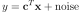
The parameter expansion can be motivated by noticing that we can add an
auxiliary variable which rotates the variables 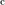 and
 so that the dot product is unaffected:
so that the dot product is unaffected:
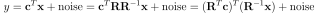
Now, applying this rotation to the posterior approximations
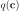 and 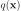, and optimizing the VB lower
bound with respect to the rotation leads to parameterized joint optimization of
and .
The available parameter expansion methods are in module transformations:
>>> from bayespy.inference.vmp import transformations
First, you create the rotation transformations for the two variables:
>>> rotX = transformations.RotateGaussianARD(X)
>>> rotC = transformations.RotateGaussianARD(C, alpha)
Here, the rotation for C provides the ARD parameters alpha so they are
updated simultaneously. In addition to RotateGaussianARD, there are a
few other built-in rotations defined, for instance, RotateGaussian and
RotateGaussianMarkovChain. It is extremely important that the model
satisfies the assumptions made by the rotation class and the user is mostly
responsible for this. The optimizer for the rotations is constructed by giving
the two rotations and the dimensionality of the rotated space:
>>> R = transformations.RotationOptimizer(rotC, rotX, D)
Now, calling rotate method will find optimal rotation and update the
relevant nodes (X, C and alpha) accordingly:
>>> R.rotate()
Let us see how our iteration would have gone if we had used this parameter expansion. First, let us re-initialize our nodes and VB algorithm:
>>> alpha.initialize_from_prior()
>>> C.initialize_from_prior()
>>> X.initialize_from_parameters(np.random.randn(1, 100, D), 10)
>>> tau.initialize_from_prior()
>>> Q = VB(Y, C, X, alpha, tau)
Then, the rotation is set to run after each iteration step:
>>> Q.callback = R.rotate
Now the iteration converges to the relative tolerance 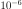 much faster:
>>> Q.update(repeat=1000, tol=1e-6)
Iteration 1: loglike=-9.363...e+02 (... seconds)
...
Iteration 18: loglike=-1.221354e+02 (... seconds)
Converged at iteration 18.
The convergence took 18 iterations with rotations and 488 or 847 iterations without the parameter expansion. In addition, the lower bound is improved slightly. One can compare the number of iteration steps in this case because the cost per iteration step with or without parameter expansion is approximately the same. Sometimes the parameter expansion can have the drawback that it converges to a bad local optimum. Usually, this can be solved by updating the nodes near the observations a few times before starting to update the hyperparameters and to use parameter expansion. In any case, the parameter expansion is practically necessary when using state-space models in order to converge to a proper solution in a reasonable time.
Examining the results¶
After the results have been obtained, it is important to be able to examine the results easily. The results can be examined either numerically by inspecting numerical arrays or visually by plotting distributions of the nodes. In addition, the posterior distributions can be visualized during the learning algorithm and the results can saved into a file.
Plotting the results¶
The module plot offers some plotting basic functionality:
>>> import bayespy.plot as bpplt
The module contains matplotlib.pyplot module if the user needs that. For
instance, interactive plotting can be enabled as:
>>> bpplt.pyplot.ion()
The plot module contains some functions but it is not a very
comprehensive collection, thus the user may need to write some problem- or
model-specific plotting functions. The current collection is:
pdf(): show probability density function of a scalarcontour(): show probability density function of two-element vectorhinton(): show the Hinton diagramplot(): show value as a function
The probability density function of a scalar random variable can be plotted
using the function pdf():
>>> bpplt.pyplot.figure()
<matplotlib.figure.Figure object at 0x...>
>>> bpplt.pdf(Q['tau'], np.linspace(60, 140, num=100))
[<matplotlib.lines.Line2D object at 0x...>]
(Source code, png, hires.png, pdf)

The variable tau models the inverse variance of the noise, for which the
true value is  . Thus, the posterior captures the true value
quite accurately. Similarly, the function
. Thus, the posterior captures the true value
quite accurately. Similarly, the function contour() can be used to plot
the probability density function of a 2-dimensional variable, for instance:
>>> V = Gaussian([3, 5], [[4, 2], [2, 5]])
>>> bpplt.pyplot.figure()
<matplotlib.figure.Figure object at 0x...>
>>> bpplt.contour(V, np.linspace(1, 5, num=100), np.linspace(3, 7, num=100))
<matplotlib.contour.QuadContourSet object at 0x...>
(Source code, png, hires.png, pdf)

Both pdf() and contour() require that the user provides the grid on
which the probability density function is computed. They also support several
keyword arguments for modifying the output, similarly as plot and
contour in matplotlib.pyplot. These functions can be used only for
stochastic nodes. A few other plot types are also available as built-in
functions. A Hinton diagram can be plotted as:
>>> bpplt.pyplot.figure()
<matplotlib.figure.Figure object at 0x...>
>>> bpplt.hinton(C)
(Source code, png, hires.png, pdf)
The diagram shows the elements of the matrix  . The size of the filled
rectangle corresponds to the absolute value of the element mean, and white and
black correspond to positive and negative values, respectively. The non-filled
rectangle shows standard deviation. From this diagram it is clear that the
third column of has been pruned out and the rows that were missing in
the data have zero mean and column-specific variance. The function
. The size of the filled
rectangle corresponds to the absolute value of the element mean, and white and
black correspond to positive and negative values, respectively. The non-filled
rectangle shows standard deviation. From this diagram it is clear that the
third column of has been pruned out and the rows that were missing in
the data have zero mean and column-specific variance. The function
hinton() is a simple wrapper for node-specific Hinton diagram plotters,
such as gaussian_hinton() and dirichlet_hinton(). Thus, the keyword
arguments depend on the node which is plotted.
Another plotting function is plot(), which just plots the values of the
node over one axis as a function:
>>> bpplt.pyplot.figure()
<matplotlib.figure.Figure object at 0x...>
>>> bpplt.plot(X, axis=-2)
(Source code, png, hires.png, pdf)

Now, the axis is the second last axis which corresponds to
. As 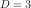, there are three subplots. For Gaussian
variables, the function shows the mean and two standard deviations. The plot
shows that the third component has been pruned out, thus the method has been
able to recover the true dimensionality of the latent space. It also has
similar keyword arguments to plot function in matplotlib.pyplot. Again,
plot() is a simple wrapper over node-specific plotting functions, thus it
supports only some node classes.
Monitoring during the inference algorithm¶
It is possible to plot the distribution of the nodes during the learning algorithm. This is useful when the user is interested to see how the distributions evolve during learning and what is happening to the distributions. In order to utilize monitoring, the user must set plotters for the nodes that he or she wishes to monitor. This can be done either when creating the node or later at any time.
The plotters are set by creating a plotter object and providing this object to
the node. The plotter is a wrapper of one of the plotting functions mentioned
above: PDFPlotter, ContourPlotter, HintonPlotter or
FunctionPlotter. Thus, our example model could use the following
plotters:
>>> tau.set_plotter(bpplt.PDFPlotter(np.linspace(60, 140, num=100)))
>>> C.set_plotter(bpplt.HintonPlotter())
>>> X.set_plotter(bpplt.FunctionPlotter(axis=-2))
These could have been given at node creation as a keyword argument plotter:
>>> V = Gaussian([3, 5], [[4, 2], [2, 5]],
... plotter=bpplt.ContourPlotter(np.linspace(1, 5, num=100),
... np.linspace(3, 7, num=100)))
When the plotter is set, one can use the plot method of the node to perform
plotting:
>>> V.plot()
<matplotlib.contour.QuadContourSet object at 0x...>
Nodes can also be plotted using the plot method of the inference engine:
>>> Q.plot('C')
This method remembers the figure in which a node has been plotted and uses that
every time it plots the same node. In order to monitor the nodes during
learning, it is possible to use the keyword argument plot:
>>> Q.update(repeat=5, plot=True, tol=np.nan)
Iteration 19: loglike=-1.221354e+02 (... seconds)
Iteration 20: loglike=-1.221354e+02 (... seconds)
Iteration 21: loglike=-1.221354e+02 (... seconds)
Iteration 22: loglike=-1.221354e+02 (... seconds)
Iteration 23: loglike=-1.221354e+02 (... seconds)
Each node which has a plotter set will be plotted after it is updated. Note that this may slow down the inference significantly if the plotting operation is time consuming.
Posterior parameters and moments¶
If the built-in plotting functions are not sufficient, it is possible to use
matplotlib.pyplot for custom plotting. Each node has get_moments method
which returns the moments and they can be used for plotting. Stochastic
exponential family nodes have natural parameter vectors which can also be used.
In addition to plotting, it is also possible to just print the moments or
parameters in the console.
Saving and loading results¶
The results of the inference engine can be easily saved and loaded using
VB.save() and VB.load() methods:
>>> import tempfile
>>> filename = tempfile.mkstemp(suffix='.hdf5')[1]
>>> Q.save(filename=filename)
>>> Q.load(filename=filename)
The results are stored in a HDF5 file. The user may set an autosave file in
which the results are automatically saved regularly. Autosave filename can be
set at creation time by autosave_filename keyword argument or later using
VB.set_autosave() method. If autosave file has been set, the
VB.save() and VB.load() methods use that file by default. In order
for the saving to work, all stochastic nodes must have been given (unique)
names.
However, note that these methods do not save nor load the node definitions.
It means that the user must create the nodes and the inference engine and then
use VB.load() to set the state of the nodes and the inference engine. If
there are any differences in the model that was saved and the one which is tried
to update using loading, then loading does not work. Thus, the user should keep
the model construction unmodified in a Python file in order to be able to load
the results later. Or if the user wishes to share the results, he or she must
share the model construction Python file with the HDF5 results file.
Advanced topics¶
This section contains brief information on how to implement some advanced methods in BayesPy. These methods include Riemannian conjugate gradient methods, pattern search, simulated annealing, collapsed variational inference and stochastic variational inference. In order to use these methods properly, the user should understand them to some extent. They are also considered experimental, thus you may encounter bugs or unimplemented features. In any case, these methods may provide huge performance improvements easily compared to the standard VB-EM algorithm.
Gradient-based optimization¶
Variational Bayesian learning basically means that the parameters of the approximate posterior distributions are optimized to maximize the lower bound of the marginal log likelihood [3]. This optimization can be done by using gradient-based optimization methods. In order to improve the gradient-based methods, it is recommended to take into account the information geometry by using the Riemannian (a.k.a. natural) gradient. In fact, the standard VB-EM algorithm is equivalent to a gradient ascent method which uses the Riemannian gradient and step length 1. Thus, it is natural to try to improve this method by using non-linear conjugate gradient methods instead of gradient ascent. These optimization methods are especially useful when the VB-EM update equations are not available but one has to use fixed form approximation. But it is possible that the Riemannian conjugate gradient method improve performance even when the VB-EM update equations are available.
The optimization algorithm in VB.optimize() has a simple interface.
Instead of using the default Riemannian geometry, one can use the Euclidean
geometry by giving riemannian=False. It is also possible to choose the
optimization method from gradient ascent (method='gradient') or
conjugate gradient methods (only method='fletcher-reeves' implemented at
the moment). For instance, we could optimize nodes C and X jointly
using Euclidean gradient ascent as:
>>> Q = VB(Y, C, X, alpha, tau)
>>> Q.optimize(C, X, riemannian=False, method='gradient', maxiter=5)
Iteration ...
Note that this is very inefficient way of updating those nodes (bad geometry and not using conjugate gradients). Thus, one should understand the idea of these optimization methods, otherwise one may do something extremely inefficient. Most likely this method can be found useful in combination with the advanced tricks in the following sections.
Note
The Euclidean gradient has not been implemented for all nodes yet. The Euclidean gradient is required by the Euclidean geometry based optimization but also by the conjugate gradient methods in the Riemannian geometry. Thus, the Riemannian conjugate gradient may not yet work for all models.
It is possible to construct custom optimization algorithms with the tools
provided by VB. For instance, VB.get_parameters() and
VB.set_parameters() can be used to handle the parameters of nodes.
VB.get_gradients() is used for computing the gradients of nodes. The
parameter and gradient objects are not numerical arrays but more complex nested
lists not meant to be accessed by the user. Thus, for simple arithmetics with
the parameter and gradient objects, use functions VB.add() and
VB.dot(). Finally, VB.compute_lowerbound() and
VB.has_converged() can be used to monitor the lower bound.
Collapsed inference¶
The optimization method can be used efficiently in such a way that some of the variables are collapsed, that is, marginalized out [1]. The collapsed variables must be conditionally independent given the observations and all other variables. Probably, one also wants that the size of the marginalized variables is large and the size of the optimized variables is small. For instance, in our PCA example, we could optimize as follows:
>>> Q.optimize(C, tau, maxiter=10, collapsed=[X, alpha])
Iteration ...
The collapsed variables are given as a list. This optimization does basically
the following: It first computes the gradients for C and tau and takes
an update step using the desired optimization method. Then, it updates the
collapsed variables by using the standard VB-EM update equations. These two
steps are taken in turns. Effectively, this corresponds to collapsing the
variables X and alpha in a particular way. The point of this method is
that the number of parameters in the optimization reduces significantly and the
collapsed variables are updated optimally. For more details, see
[1].
It is possible to use this method in such a way, that the collapsed variables are not conditionally independent given the observations and all other variables. However, in that case, the method does not anymore correspond to collapsing the variables but just using VB-EM updates after gradient-based updates. The method does not check for conditional independence, so the user is free to do this.
Note
Although the Riemannian conjugate gradient method has not yet been implemented for all nodes, it may be possible to collapse those nodes and optimize the other nodes for which the Euclidean gradient is already implemented.
Pattern search¶
The pattern search method estimates the direction in which the approximate posterior distributions are updating and performs a line search in that direction [4]. The search direction is based on the difference in the VB parameters on successive updates (or several updates). The idea is that the VB-EM algorithm may be slow because it just zigzags and this can be fixed by moving to the direction in which the VB-EM is slowly moving.
BayesPy offers a simple built-in pattern search method
VB.pattern_search(). The method updates the nodes twice, measures the
difference in the parameters and performs a line search with a small number of
function evaluations:
>>> Q.pattern_search(C, X)
Iteration ...
Similarly to the collapsed optimization, it is possible to collapse some of the variables in the pattern search. The same rules of conditional independence apply as above. The collapsed variables are given as list:
>>> Q.pattern_search(C, tau, collapsed=[X, alpha])
Iteration ...
Also, a maximum number of iterations can be set by using maxiter keyword
argument. It is not always obvious whether a pattern search will improve the
rate of convergence or not but if it seems that the convergence is slow because
of zigzagging, it may be worth a try. Note that the computational cost of the
pattern search is quite high, thus it is not recommended to perform it after
every VB-EM update but every now and then, for instance, after every 10
iterations. In addition, it is possible to write a more customized VB learning
algorithm which uses pattern searches by using the different methods of
VB discussed above.
Deterministic annealing¶
The standard VB-EM algorithm converges to a local optimum which can often be inferior to the global optimum and many other local optima. Deterministic annealing aims at finding a better local optimum, hopefully even the global optimum [5]. It does this by increasing the weight on the entropy of the posterior approximation in the VB lower bound. Effectively, the annealed lower bound becomes closer to a uniform function instead of the original multimodal lower bound. The weight on the entropy is recovered slowly and the optimization is much more robust to initialization.
In BayesPy, the annealing can be set by using VB.set_annealing(). The
given annealing should be in range ![(0,1]](_images/math/48c650ca6c0103c5c8c99a511de327d90f12302a.svg) but this is not validated in
case the user wants to do something experimental. If annealing is set to 1, the
original VB lower bound is recovered. Annealing with 0 would lead to an
improper uniform distribution, thus it will lead to errors. The entropy term is
weighted by the inverse of this annealing term. An alternative view is that the
model probability density functions are raised to the power of the annealing
term.
but this is not validated in
case the user wants to do something experimental. If annealing is set to 1, the
original VB lower bound is recovered. Annealing with 0 would lead to an
improper uniform distribution, thus it will lead to errors. The entropy term is
weighted by the inverse of this annealing term. An alternative view is that the
model probability density functions are raised to the power of the annealing
term.
Typically, the annealing is used in such a way that the annealing is small at the beginning and increased after every convergence of the VB algorithm until value 1 is reached. After the annealing value is increased, the algorithm continues from where it had just converged. The annealing can be used for instance as:
>>> beta = 0.1
>>> while beta < 1.0:
... beta = min(beta*1.5, 1.0)
... Q.set_annealing(beta)
... Q.update(repeat=100, tol=1e-4)
Iteration ...
Here, the tol keyword argument is used to adjust the threshold for
convergence. In this case, it is a bit larger than by default so the algorithm
does not need to converge perfectly but a rougher convergence is sufficient for
the next iteration with a new annealing value.
Stochastic variational inference¶
In stochastic variational inference [2], the idea is to use mini-batches of large datasets to compute noisy gradients and learn the VB distributions by using stochastic gradient ascent. In order for it to be useful, the model must be such that it can be divided into “intermediate” and “global” variables. The number of intermediate variables increases with the data but the number of global variables remains fixed. The global variables are learnt in the stochastic optimization.
By denoting the data as ![Y=[Y_1, \ldots, Y_N]](_images/math/6540b80d4b3c27d2753d08a645de1dcf50e0c5e3.svg) , the intermediate variables
as and the global variables as
, the intermediate variables
as and the global variables as  , the
model needs to have the following structure:
, the
model needs to have the following structure:
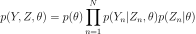
The algorithm consists of three steps which are iterated: 1) a random mini-batch of the data is selected, 2) the corresponding intermediate variables are updated by using normal VB update equations, and 3) the global variables are updated with (stochastic) gradient ascent as if there was as many replications of the mini-batch as needed to recover the original dataset size.
The learning rate for the gradient ascent must satisfy:
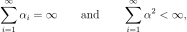
where  is the iteration number. An example of a valid learning
parameter is 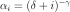, where 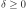 is a delay and 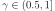 is a forgetting rate.
is the iteration number. An example of a valid learning
parameter is 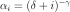, where 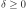 is a delay and 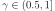 is a forgetting rate.
Stochastic variational inference is relatively easy to use in BayesPy. The idea
is that the user creates a model for the size of a mini-batch and specifies a
multiplier for those plate axes that are replicated. For the PCA example, the
mini-batch model can be costructed as follows. We decide to use X as an
intermediate variable and the other variables are global. The global variables
alpha, C and tau are constructed identically as before. The
intermediate variable X is constructed as:
>>> X = GaussianARD(0, 1,
... shape=(D,),
... plates=(1,5),
... plates_multiplier=(1,20),
... name='X')
Note that the plates are (1,5) whereas they are (1,100) in the full
model. Thus, we need to provide a plates multiplier (1,20) to define how
the plates are replicated to get the full dataset. These multipliers do not
need to be integers, in this case the latter plate axis is multiplied by
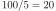. The remaining variables are defined as before:
>>> F = Dot(C, X)
>>> Y = GaussianARD(F, tau, name='Y')
Note that the plates of Y and F also correspond to the size of the
mini-batch and they also deduce the plate multipliers from their parents, thus
we do not need to specify the multiplier here explicitly (although it is ok to
do so).
Let us construct the inference engine for the new mini-batch model:
>>> Q = VB(Y, C, X, alpha, tau)
Use random initialization for C to break the symmetry in C and X:
>>> C.initialize_from_random()
Then, stochastic variational inference algorithm could look as follows:
>>> Q.ignore_bound_checks = True
>>> for n in range(200):
... subset = np.random.choice(100, 5)
... Y.observe(data[:,subset])
... Q.update(X)
... learning_rate = (n + 2.0) ** (-0.7)
... Q.gradient_step(C, alpha, tau, scale=learning_rate)
Iteration ...
First, we ignore the bound checks because they are noisy. Then, the loop
consists of three parts: 1) Draw a random mini-batch of the data (5 samples from
100). 2) Update the intermediate variable X. 3) Update global variables
with gradient ascent using a proper learning rate.
Black-box variational inference¶
NOT YET IMPLEMENTED.
Examples¶
Multinomial distribution: bags of marbles¶
Written by: Deebul Nair (2016)
Edited by: Jaakko Luttinen (2016)
Inspired by https://probmods.org/hierarchical-models.html
Using multinomial distribution¶
There are several bags of coloured marbles, each bag containing different amounts of each color. Marbles are drawn at random with replacement from the bags. The goal is to predict the distribution of the marbles in each bag.
Data generation¶
Let us create a dataset. First, decide the number of bags, colors and trials (i.e., draws):
In [2]:
n_colors = 5 # number of possible colors
n_bags = 3 # number of bags
n_trials = 20 # number of draws from each bag
Generate randomly a color distribution for each bag:
In [3]:
from bayespy import nodes
import numpy as np
p_colors = nodes.Dirichlet(n_colors * [0.5], plates=(n_bags,)).random()
The concentration parameter 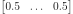 makes the distributions very non-uniform within each bag, that is, the amount of each color can be very different. We can visualize the probability distribution of the colors in each bag:
In [4]:
import bayespy.plot as bpplt
bpplt.hinton(p_colors)
bpplt.pyplot.title("Original probability distributions of colors in the bags");
As one can see, the color distributions aren’t very uniform in any of the bags because of the small concentration parameter. Next, make the ball draws:
In [5]:
marbles = nodes.Multinomial(n_trials, p_colors).random()
print(marbles)
[[ 0 9 2 0 9]
[ 0 18 0 0 2]
[ 5 2 1 3 9]]
Model¶
We will use the same generative model for estimating the color distributions in the bags as we did for generating the data:
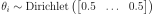
The simple graphical model can be drawn as below:
In [6]:
%%tikz -f svg
\usetikzlibrary{bayesnet}
\node [latent] (theta) {$\theta$};
\node [below=of theta, obs] (y) {$y$};
\edge {theta} {y};
\plate {trials} {(y)} {trials};
\plate {bags} {(theta)(y)(trials)} {bags};
The model is constructed equivalently to the generative model (except we don’t use the nodes to draw random samples):
In [7]:
theta = nodes.Dirichlet(n_colors * [0.5], plates=(n_bags,))
y = nodes.Multinomial(n_trials, theta)
Data is provided by using the observe method:
In [8]:
y.observe(marbles)
Performing Inference¶
In [9]:
from bayespy.inference import VB
Q = VB(y, theta)
Q.update(repeat=1000)
Iteration 1: loglike=-2.617894e+01 (0.001 seconds)
Iteration 2: loglike=-2.617894e+01 (0.001 seconds)
Converged at iteration 2.
In [10]:
import bayespy.plot as bpplt
bpplt.hinton(theta)
bpplt.pyplot.title("Learned distribution of colors")
bpplt.pyplot.show()
Using categorical Distribution¶
The same problem can be solved with categorical distirbution. Categorical distribution is similar to the Multinomical distribution expect for the output it produces.
Multinomial and Categorical infer the number of colors from the size of the probability vector (p_theta) Categorical data is in a form where the value tells the index of the color that was picked in a trial. so if n_colors=5, Categorical data could be [4, 4, 0, 1, 1, 2, 4] if the number of trials was 7.
multinomial data is such that you have a vector where each element tells how many times that color was picked, for instance, [3, 0, 4] if you have 7 trials.
So there is significant difference in Multinomial and Categorical data . Depending on the data you have the choice of the Distribution has to be made.
Now we can see an example of Hierarchical model usign categorical data generator and model
In [11]:
from bayespy import nodes
import numpy as np
#The marbles drawn based on the distribution for 10 trials
# Using same p_color distribution as in the above example
draw_marbles = nodes.Categorical(p_colors,
plates=(n_trials, n_bags)).random()
Model¶
In [12]:
from bayespy import nodes
import numpy as np
p_theta = nodes.Dirichlet(np.ones(n_colors),
plates=(n_bags,),
name='p_theta')
bag_model = nodes.Categorical(p_theta,
plates=(n_trials, n_bags),
name='bag_model')
Inference¶
In [13]:
bag_model.observe(draw_marbles)
In [14]:
from bayespy.inference import VB
Q = VB(bag_model, p_theta)
In [15]:
Q.update(repeat=1000)
Iteration 1: loglike=-6.595923e+01 (0.001 seconds)
Iteration 2: loglike=-6.595923e+01 (0.001 seconds)
Converged at iteration 2.
In [16]:
%matplotlib inline
import bayespy.plot as bpplt
bpplt.hinton(p_theta)
bpplt.pyplot.tight_layout()
bpplt.pyplot.title("Learned Distribution of colors using Categorical Distribution")
bpplt.pyplot.show()
This example is a Jupyter notebook. You can download it or run it interactively on mybinder.org.
Linear regression¶
Data¶
The true parameters of the linear regression:
In [1]:
import numpy as np
k = 2 # slope
c = 5 # bias
s = 2 # noise standard deviation
Generate data:
In [3]:
x = np.arange(10)
y = k*x + c + s*np.random.randn(10)
Model¶
The regressors, that is, the input data:
In [4]:
X = np.vstack([x, np.ones(len(x))]).T
Note that we added a column of ones to the regressor matrix for the bias term. We model the slope and the bias term in the same node so we do not factorize between them:
In [5]:
from bayespy.nodes import GaussianARD
B = GaussianARD(0, 1e-6, shape=(2,))
The first element is the slope which multiplies x and the second element is the bias term which multiplies the constant ones. Now we compute the dot product of X and B:
In [6]:
from bayespy.nodes import SumMultiply
F = SumMultiply('i,i', B, X)
The noise parameter:
In [7]:
from bayespy.nodes import Gamma
tau = Gamma(1e-3, 1e-3)
The noisy observations:
In [8]:
Y = GaussianARD(F, tau)
Inference¶
Observe the data:
In [9]:
Y.observe(y)
Construct the variational Bayesian (VB) inference engine by giving all stochastic nodes:
In [10]:
from bayespy.inference import VB
Q = VB(Y, B, tau)
Iterate until convergence:
In [11]:
Q.update(repeat=1000)
Iteration 1: loglike=-4.080970e+01 (0.003 seconds)
Iteration 2: loglike=-4.057132e+01 (0.003 seconds)
Iteration 3: loglike=-4.056572e+01 (0.003 seconds)
Iteration 4: loglike=-4.056551e+01 (0.003 seconds)
Converged at iteration 4.
Results¶
Create a simple predictive model for new inputs:
In [12]:
xh = np.linspace(-5, 15, 100)
Xh = np.vstack([xh, np.ones(len(xh))]).T
Fh = SumMultiply('i,i', B, Xh)
Note that we use the learned node B but create a new regressor array for predictions. Plot the predictive distribution of noiseless function values:
In [13]:
import bayespy.plot as bpplt
bpplt.pyplot.figure()
bpplt.plot(Fh, x=xh, scale=2)
bpplt.plot(y, x=x, color='r', marker='x', linestyle='None')
bpplt.plot(k*xh+c, x=xh, color='r');

Note that the above plot shows two standard deviation of the posterior of the noiseless function, thus the data points may lie well outside this range. The red line shows the true linear function. Next, plot the distribution of the noise parameter and the true value, 2−2=0.25:
In [14]:
bpplt.pyplot.figure()
bpplt.pdf(tau, np.linspace(1e-6,1,100), color='k')
bpplt.pyplot.axvline(s**(-2), color='r');
The noise level is captured quite well, although the posterior has more mass on larger noise levels (smaller precision parameter values). Finally, plot the distribution of the regression parameters and mark the true value:
In [15]:
bpplt.pyplot.figure();
bpplt.contour(B, np.linspace(1,3,1000), np.linspace(1,9,1000),
n=10, colors='k');
bpplt.plot(c, x=k, color='r', marker='x', linestyle='None',
markersize=10, markeredgewidth=2)
bpplt.pyplot.xlabel(r'$k$');
bpplt.pyplot.ylabel(r'$c$');
In this case, the true parameters are captured well by the posterior distribution.
Improving accuracy¶
The model can be improved by not factorizing between B and tau but learning their joint posterior distribution. This requires a slight modification to the model by using GaussianGammaISO node:
In [16]:
from bayespy.nodes import GaussianGamma
B_tau = GaussianGamma(np.zeros(2), 1e-6*np.identity(2), 1e-3, 1e-3)
This node contains both the regression parameter vector and the noise parameter. We compute the dot product similarly as before:
In [17]:
F_tau = SumMultiply('i,i', B_tau, X)
However, Y is constructed as follows:
In [18]:
Y = GaussianARD(F_tau, 1)
Because the noise parameter is already in F_tau we can give a constant one as the second argument. The total noise parameter for Y is the product of the noise parameter in F_tau and one. Now, inference is run similarly as before:
In [19]:
Y.observe(y)
Q = VB(Y, B_tau)
Q.update(repeat=1000)
Iteration 1: loglike=-4.130423e+01 (0.002 seconds)
Iteration 2: loglike=-4.130423e+01 (0.002 seconds)
Converged at iteration 2.
Note that the method converges immediately. This happens because there is only one unobserved stochastic node so there is no need for iteration and the result is actually the exact true posterior distribution, not an approximation. Currently, the main drawback of using this approach is that BayesPy does not yet contain any plotting utilities for nodes that contain both Gaussian and gamma variables jointly.
Further extensions¶
The approach discussed in this example can easily be extended to non-linear regression and multivariate regression. For non-linear regression, the inputs are first transformed by some known non-linear functions and then linear regression is applied to this transformed data. For multivariate regression, X and B are concatenated appropriately: If there are more regressors, add more columns to both X and B. If there are more output dimensions, add plates to B.
Gaussian mixture model¶
This example demonstrates the use of Gaussian mixture model for flexible density estimation, clustering or classification.
Data¶
First, let us generate some artificial data for the analysis. The data are two-dimensional vectors from one of the four different Gaussian distributions:
>>> import numpy as np
>>> y0 = np.random.multivariate_normal([0, 0], [[2, 0], [0, 0.1]], size=50)
>>> y1 = np.random.multivariate_normal([0, 0], [[0.1, 0], [0, 2]], size=50)
>>> y2 = np.random.multivariate_normal([2, 2], [[2, -1.5], [-1.5, 2]], size=50)
>>> y3 = np.random.multivariate_normal([-2, -2], [[0.5, 0], [0, 0.5]], size=50)
>>> y = np.vstack([y0, y1, y2, y3])
Thus, there are 200 data vectors in total. The data looks as follows:
>>> import bayespy.plot as bpplt
>>> bpplt.pyplot.plot(y[:,0], y[:,1], 'rx')
[<matplotlib.lines.Line2D object at 0x...>]
(Source code, png, hires.png, pdf)

Model¶
For clarity, let us denote the number of the data vectors with N
>>> N = 200
and the dimensionality of the data vectors with D:
>>> D = 2
We will use a “large enough” number of Gaussian clusters in our model:
>>> K = 10
Cluster assignments Z and the prior for the cluster assignment probabilities
alpha:
>>> from bayespy.nodes import Dirichlet, Categorical
>>> alpha = Dirichlet(1e-5*np.ones(K),
... name='alpha')
>>> Z = Categorical(alpha,
... plates=(N,),
... name='z')
The mean vectors and the precision matrices of the clusters:
>>> from bayespy.nodes import Gaussian, Wishart
>>> mu = Gaussian(np.zeros(D), 1e-5*np.identity(D),
... plates=(K,),
... name='mu')
>>> Lambda = Wishart(D, 1e-5*np.identity(D),
... plates=(K,),
... name='Lambda')
If either the mean or precision should be shared between clusters, then that
node should not have plates, that is, plates=(). The data vectors are from
a Gaussian mixture with cluster assignments Z and Gaussian component
parameters mu and Lambda:
>>> from bayespy.nodes import Mixture
>>> Y = Mixture(Z, Gaussian, mu, Lambda,
... name='Y')
>>> Z.initialize_from_random()
>>> from bayespy.inference import VB
>>> Q = VB(Y, mu, Lambda, Z, alpha)
Inference¶
Before running the inference algorithm, we provide the data:
>>> Y.observe(y)
Then, run VB iteration until convergence:
>>> Q.update(repeat=1000)
Iteration 1: loglike=-1.402345e+03 (... seconds)
...
Iteration 61: loglike=-8.888464e+02 (... seconds)
Converged at iteration 61.
The algorithm converges very quickly. Note that the default update order of the
nodes was such that mu and Lambda were updated before Z, which is
what we wanted because Z was initialized randomly.
Results¶
For two-dimensional Gaussian mixtures, the mixture components can be plotted
using gaussian_mixture_2d():
>>> bpplt.gaussian_mixture_2d(Y, alpha=alpha, scale=2)
(Source code, png, hires.png, pdf)
The function is called with scale=2 which means that each ellipse shows two
standard deviations. From the ten cluster components, the model uses
effectively the correct number of clusters (4). These clusters capture the true
density accurately.
In addition to clustering and density estimation, this model could also be used for classification by setting the known class assignments as observed.
Advanced next steps¶
Joint node for mean and precision¶
The next step for improving the results could be to use GaussianWishart
node for modelling the mean vectors mu and precision matrices Lambda
jointly without factorization. This should improve the accuracy of the
posterior approximation and the speed of the VB estimation. However, the
implementation is a bit more complex.
Fast collapsed inference¶
Bernoulli mixture model¶
This example considers data generated from a Bernoulli mixture model. One simple example process could be a questionnaire for election candidates. We observe a set of binary vectors, where each vector represents a candidate in the election and each element in these vectors correspond to a candidate’s answer to a yes-or-no question. The goal is to find groups of similar candidates and analyze the answer patterns of these groups.
Data¶
First, we generate artificial data to analyze. Let us assume that the questionnaire contains ten yes-or-no questions. We assume that there are three groups with similar opinions. These groups could represent parties. These groups have the following answering patterns, which are represented by vectors with probabilities of a candidate answering yes to the questions:
>>> p0 = [0.1, 0.9, 0.1, 0.9, 0.1, 0.9, 0.1, 0.9, 0.1, 0.9]
>>> p1 = [0.1, 0.1, 0.1, 0.1, 0.1, 0.9, 0.9, 0.9, 0.9, 0.9]
>>> p2 = [0.9, 0.9, 0.9, 0.9, 0.9, 0.1, 0.1, 0.1, 0.1, 0.1]
Thus, the candidates in the first group are likely to answer no to questions 1, 3, 5, 7 and 9, and yes to questions 2, 4, 6, 8, 10. The candidates in the second group are likely to answer yes to the last five questions, whereas the candidates in the third group are likely to answer yes to the first five questions. For convenience, we form a NumPy array of these vectors:
>>> import numpy as np
>>> p = np.array([p0, p1, p2])
Next, we generate a hundred candidates. First, we randomly select the group for each candidate:
>>> from bayespy.utils import random
>>> z = random.categorical([1/3, 1/3, 1/3], size=100)
Using the group patterns, we generate yes-or-no answers for the candidates:
>>> x = random.bernoulli(p[z])
This is our simulated data to be analyzed.
Model¶
Now, we construct a model for learning the structure in the data. We have a dataset of hundred 10-dimensional binary vectors:
>>> N = 100
>>> D = 10
We will create a Bernoulli mixture model. We assume that the true number of groups is unknown to us, so we use a large enough number of clusters:
>>> K = 10
We use the categorical distribution for the group assignments and give the group assignment probabilities an uninformative Dirichlet prior:
>>> from bayespy.nodes import Categorical, Dirichlet
>>> R = Dirichlet(K*[1e-5],
... name='R')
>>> Z = Categorical(R,
... plates=(N,1),
... name='Z')
Each group has a probability of a yes answer for each question. These probabilities are given beta priors:
>>> from bayespy.nodes import Beta
>>> P = Beta([0.5, 0.5],
... plates=(D,K),
... name='P')
The answers of the candidates are modelled with the Bernoulli distribution:
>>> from bayespy.nodes import Mixture, Bernoulli
>>> X = Mixture(Z, Bernoulli, P)
Here, Z defines the group assignments and P the answering probability
patterns for each group. Note how the plates of the nodes are matched: Z
has plates (N,1) and P has plates (D,K), but in the mixture node the
last plate axis of P is discarded and thus the node broadcasts plates
(N,1) and (D,) resulting in plates (N,D) for X.
Inference¶
In order to infer the variables in our model, we construct a variational Bayesian inference engine:
>>> from bayespy.inference import VB
>>> Q = VB(Z, R, X, P)
This also gives the default update order of the nodes. In order to find different groups, they must be initialized differently, thus we use random initialization for the group probability patterns:
>>> P.initialize_from_random()
We provide our simulated data:
>>> X.observe(x)
Now, we can run inference:
>>> Q.update(repeat=1000)
Iteration 1: loglike=-6.872145e+02 (... seconds)
...
Iteration 17: loglike=-5.236921e+02 (... seconds)
Converged at iteration 17.
The algorithm converges in 17 iterations.
Results¶
Now we can examine the approximate posterior distribution. First, let us plot the group assignment probabilities:
>>> import bayespy.plot as bpplt
>>> bpplt.hinton(R)
(Source code, png, hires.png, pdf)
This plot shows that there are three dominant groups, which is equal to the true number of groups used to generate the data. However, there are still two smaller groups as the data does not give enough evidence to prune them out. The yes-or-no answer probability patterns for the groups can be plotted as:
>>> bpplt.hinton(P)
(Source code, png, hires.png, pdf)

The three dominant groups have found the true patterns accurately. The patterns of the two minor groups some kind of mixtures of the three groups and they exist because the generated data happened to contain a few samples giving evidence for these groups. Finally, we can plot the group assignment probabilities for the candidates:
>>> bpplt.hinton(Z)
(Source code, png, hires.png, pdf)
This plot shows the clustering of the candidates. It is possible to use
HintonPlotter to enable monitoring during the VB iteration by providing
plotter=HintonPlotter() for Z, P and R when creating the nodes.


Principal component analysis¶
This example uses a simple principal component analysis to find a two-dimensional latent subspace in a higher dimensional dataset.
Data¶
Let us create a Gaussian dataset with latent space dimensionality two and some observation noise:
>>> M = 20
>>> N = 100
>>> import numpy as np
>>> x = np.random.randn(N, 2)
>>> w = np.random.randn(M, 2)
>>> f = np.einsum('ik,jk->ij', w, x)
>>> y = f + 0.1*np.random.randn(M, N)
Model¶
We will use 10-dimensional latent space in our model and let it learn the true dimensionality:
>>> D = 10
Import relevant nodes:
>>> from bayespy.nodes import GaussianARD, Gamma, SumMultiply
The latent states:
>>> X = GaussianARD(0, 1, plates=(1,N), shape=(D,))
The loading matrix with automatic relevance determination (ARD) prior:
>>> alpha = Gamma(1e-5, 1e-5, plates=(D,))
>>> C = GaussianARD(0, alpha, plates=(M,1), shape=(D,))
Compute the dot product of the latent states and the loading matrix:
>>> F = SumMultiply('d,d->', X, C)
The observation noise:
>>> tau = Gamma(1e-5, 1e-5)
The observed variable:
>>> Y = GaussianARD(F, tau)
Inference¶
Observe the data:
>>> Y.observe(y)
We do not have missing data now, but they could be easily handled with mask
keyword argument. Construct variational Bayesian (VB) inference engine:
>>> from bayespy.inference import VB
>>> Q = VB(Y, X, C, alpha, tau)
Initialize the latent subspace randomly, otherwise both X and C would
converge to zero:
>>> C.initialize_from_random()
Now we could use VB.update() to run the inference. However, let us first
create a parameter expansion to speed up the inference. The expansion is based
on rotating the latent subspace optimally. This is optional but will usually
improve the speed of the inference significantly, especially in high-dimensional
problems:
>>> from bayespy.inference.vmp.transformations import RotateGaussianARD
>>> rot_X = RotateGaussianARD(X)
>>> rot_C = RotateGaussianARD(C, alpha)
By giving alpha for rot_C, the rotation will also optimize alpha
jointly with C. Now that we have defined the rotations for our variables,
we need to construct an optimizer:
>>> from bayespy.inference.vmp.transformations import RotationOptimizer
>>> R = RotationOptimizer(rot_X, rot_C, D)
In order to use the rotations automatically, we need to set it as a callback function:
>>> Q.set_callback(R.rotate)
For more information about the rotation parameter expansion, see [7] and [6]. Now we can run the actual inference until convergence:
>>> Q.update(repeat=1000)
Iteration 1: loglike=-2.33...e+03 (... seconds)
...
Iteration ...: loglike=6.500...e+02 (... seconds)
Converged at iteration ...
Results¶
The results can be visualized, for instance, by plotting the Hinton diagram of the loading matrix:
>>> import bayespy.plot as bpplt
>>> bpplt.pyplot.figure()
<matplotlib.figure.Figure object at 0x...>
>>> bpplt.hinton(C)
(Source code, png, hires.png, pdf)
The method has been able to prune out unnecessary latent dimensions and keep two components, which is the true number of components.
>>> bpplt.pyplot.figure()
<matplotlib.figure.Figure object at 0x...>
>>> bpplt.plot(F)
>>> bpplt.plot(f, color='r', marker='x', linestyle='None')
(Source code, png, hires.png, pdf)

The reconstruction of the noiseless function values are practically perfect in
this simple example. Larger noise variance, more latent space dimensions and
missing values would make this problem more difficult. The model construction
could also be improved by having, for instance, C and tau in the same
node without factorizing between them in the posterior approximation. This can
be achieved by using GaussianGammaISO node.
Linear state-space model¶
Model¶
In linear state-space models a sequence of -dimensional observations
is assumed to be generated
from latent -dimensional states
which follow a first-order
Markov process:
where the noise is Gaussian, is the  state
dynamics matrix and is the loading
matrix. Usually, the latent space dimensionality is assumed to be much
smaller than the observation space dimensionality in order to model
the dependencies of high-dimensional observations efficiently.
state
dynamics matrix and is the loading
matrix. Usually, the latent space dimensionality is assumed to be much
smaller than the observation space dimensionality in order to model
the dependencies of high-dimensional observations efficiently.
In order to construct the model in BayesPy, first import relevant nodes:
>>> from bayespy.nodes import GaussianARD, GaussianMarkovChain, Gamma, Dot
The data vectors will be 30-dimensional:
>>> M = 30
There will be 400 data vectors:
>>> N = 400
Let us use 10-dimensional latent space:
>>> D = 10
The state dynamics matrix has ARD prior:
>>> alpha = Gamma(1e-5,
... 1e-5,
... plates=(D,),
... name='alpha')
>>> A = GaussianARD(0,
... alpha,
... shape=(D,),
... plates=(D,),
... name='A')
Note that is a -dimensional matrix.
However, in BayesPy it is modelled as a collection (plates=(D,)) of
-dimensional vectors (shape=(D,)) because this is how the variables
factorize in the posterior approximation of the state dynamics matrix in
GaussianMarkovChain. The latent states are constructed as
>>> X = GaussianMarkovChain(np.zeros(D),
... 1e-3*np.identity(D),
... A,
... np.ones(D),
... n=N,
... name='X')
where the first two arguments are the mean and precision matrix of the initial
state, the third argument is the state dynamics matrix and the fourth argument
is the diagonal elements of the precision matrix of the innovation noise. The
node also needs the length of the chain given as the keyword argument n=N.
Thus, the shape of this node is (N,D).
The linear mapping from the latent space to the observation space is modelled with the loading matrix which has ARD prior:
>>> gamma = Gamma(1e-5,
... 1e-5,
... plates=(D,),
... name='gamma')
>>> C = GaussianARD(0,
... gamma,
... shape=(D,),
... plates=(M,1),
... name='C')
Note that the plates for C are (M,1), thus the full shape of the node is
(M,1,D). The unit plate axis is added so that C broadcasts with X
when computing the dot product:
>>> F = Dot(C,
... X,
... name='F')
This dot product is computed over the -dimensional latent space, thus
the result is a -dimensional matrix which is now represented
with plates (M,N) in BayesPy:
>>> F.plates
(30, 400)
We also need to use random initialization either for C or X in order to
find non-zero latent space because by default both C and X are
initialized to zero because of their prior distributions. We use random
initialization for C and then we must update X the first time before
updating C:
>>> C.initialize_from_random()
The precision of the observation noise is given gamma prior:
>>> tau = Gamma(1e-5,
... 1e-5,
... name='tau')
The observations are noisy versions of the dot products:
>>> Y = GaussianARD(F,
... tau,
... name='Y')
The variational Bayesian inference engine is then construced as:
>>> from bayespy.inference import VB
>>> Q = VB(X, C, gamma, A, alpha, tau, Y)
Note that X is given before C, thus X is updated before C by
default.
Data¶
Now, let us generate some toy data for our model. Our true latent space is four dimensional with two noisy oscillator components, one random walk component and one white noise component.
>>> w = 0.3
>>> a = np.array([[np.cos(w), -np.sin(w), 0, 0],
... [np.sin(w), np.cos(w), 0, 0],
... [0, 0, 1, 0],
... [0, 0, 0, 0]])
The true linear mapping is just random:
>>> c = np.random.randn(M,4)
Then, generate the latent states and the observations using the model equations:
>>> x = np.empty((N,4))
>>> f = np.empty((M,N))
>>> y = np.empty((M,N))
>>> x[0] = 10*np.random.randn(4)
>>> f[:,0] = np.dot(c,x[0])
>>> y[:,0] = f[:,0] + 3*np.random.randn(M)
>>> for n in range(N-1):
... x[n+1] = np.dot(a,x[n]) + [1,1,10,10]*np.random.randn(4)
... f[:,n+1] = np.dot(c,x[n+1])
... y[:,n+1] = f[:,n+1] + 3*np.random.randn(M)
We want to simulate missing values, thus we create a mask which randomly removes 80% of the data:
>>> from bayespy.utils import random
>>> mask = random.mask(M, N, p=0.2)
>>> Y.observe(y, mask=mask)
Inference¶
As we did not define plotters for our nodes when creating the model, it is done now for some of the nodes:
>>> import bayespy.plot as bpplt
>>> X.set_plotter(bpplt.FunctionPlotter(center=True, axis=-2))
>>> A.set_plotter(bpplt.HintonPlotter())
>>> C.set_plotter(bpplt.HintonPlotter())
>>> tau.set_plotter(bpplt.PDFPlotter(np.linspace(0.02, 0.5, num=1000)))
This enables plotting of the approximate posterior distributions during VB
learning. The inference engine can be run using VB.update() method:
>>> Q.update(repeat=10)
Iteration 1: loglike=-1.439704e+05 (... seconds)
...
Iteration 10: loglike=-1.051441e+04 (... seconds)
The iteration progresses a bit slowly, thus we’ll consider parameter expansion to speed it up.
Parameter expansion¶
Section Parameter expansion discusses parameter expansion for state-space models to speed up inference. It is based on a rotating the latent space such that the posterior in the observation space is not affected:
Thus, the transformation is and . In order to keep the dynamics of the latent states unaffected by the transformation, the state dynamics matrix must be transformed accordingly:
resulting in a transformation
 . For more
details, refer to [6] and [7]. In BayesPy,
the transformations are available in
. For more
details, refer to [6] and [7]. In BayesPy,
the transformations are available in
bayespy.inference.vmp.transformations:
>>> from bayespy.inference.vmp import transformations
The rotation of the loading matrix along with the ARD parameters is defined as:
>>> rotC = transformations.RotateGaussianARD(C, gamma)
For rotating X, we first need to define the rotation of the state dynamics
matrix:
>>> rotA = transformations.RotateGaussianARD(A, alpha)
Now we can define the rotation of the latent states:
>>> rotX = transformations.RotateGaussianMarkovChain(X, rotA)
The optimal rotation for all these variables is found using rotation optimizer:
>>> R = transformations.RotationOptimizer(rotX, rotC, D)
Set the parameter expansion to be applied after each iteration:
>>> Q.callback = R.rotate
Now, run iterations until convergence:
>>> Q.update(repeat=1000)
Iteration 11: loglike=-1.010...e+04 (... seconds)
...
Iteration 58: loglike=-8.906...e+03 (... seconds)
Converged at iteration ...
Results¶
Because we have set the plotters, we can plot those nodes as:
>>> Q.plot(X, A, C, tau)

{kind=link}
{kind=link}
{kind=link}
{kind=link}
{kind=link}
{kind=link}
{kind=link}
{kind=link}
{kind=link}
{kind=link}
{kind=link}
{kind=link}
{kind=link}
{kind=link}
{kind=link}
{kind=link}
{kind=link}
{kind=link}
{kind=link}
{kind=link}
{kind=link}
{kind=link}
{kind=link}
{kind=link}
{kind=link}
{kind=link}
{kind=link}
{kind=link}
{kind=link}
{kind=link}
{kind=link}
{kind=link}
{kind=link}
{kind=link}
{kind=link}
{kind=link}
{kind=link}
{kind=link}
{kind=link}
{kind=link}
There are clearly four effective components in X: random walk (component
number 1), random oscillation (7 and 10), and white noise (9). These dynamics
are also visible in the state dynamics matrix Hinton diagram. Note that the
white noise component does not have any dynamics. Also C shows only four
effective components. The posterior of tau captures the true value
accurately. We can also plot predictions in the
observation space:
>>> bpplt.plot(F, center=True)
(Source code, png, hires.png, pdf)
{kind=link}
{kind=link}
We can also measure the performance numerically by computing root-mean-square error (RMSE) of the missing values:
>>> from bayespy.utils import misc
>>> misc.rmse(y[~mask], F.get_moments()[0][~mask])
5.18...
This is relatively close to the standard deviation of the noise (3), so the predictions are quite good considering that only 20% of the data was used.
Latent Dirichlet allocation¶
Latent Dirichlet allocation is a widely used topic model. The data is a collection of documents which contain words. The goal of the analysis is to find topics (distribution of words in topics) and document topics (distribution of topics in documents).
Data¶
The data consists of two vectors of equal length. The elements in these vectors
correspond to the words in all documents combined. If there were
documents and each document had  words, the vectors contain elements. Let be the number of documents in total. The
first vector gives each word a document index
defining to which document the word belongs. Let be the size of the
whole available vocabulary. The second vector gives each word a vocabulary
index defining which word it is from the
vocabulary.
words, the vectors contain elements. Let be the number of documents in total. The
first vector gives each word a document index
defining to which document the word belongs. Let be the size of the
whole available vocabulary. The second vector gives each word a vocabulary
index defining which word it is from the
vocabulary.
For this demo, we will just generate an artificial dataset for simplicity. We use the LDA model itself to generate the dataset. First, import relevant packages:
>>> import numpy as np
>>> from bayespy import nodes
Let us decide the number of documents and the number of words in those documents:
>>> n_documents = 10
>>> n_words = 10000
Randomly choose into which document each word belongs to:
>>> word_documents = nodes.Categorical(np.ones(n_documents)/n_documents,
... plates=(n_words,)).random()
Let us also decide the size of our vocabulary:
>>> n_vocabulary = 100
Also, let us decide the true number of topics:
>>> n_topics = 5
Generate some random distributions for the topics in each document:
>>> p_topic = nodes.Dirichlet(1e-1*np.ones(n_topics),
... plates=(n_documents,)).random()
Generate some random distributions for the words in each topic:
>>> p_word = nodes.Dirichlet(1e-1*np.ones(n_vocabulary),
... plates=(n_topics,)).random()
Sample topic assignments for each word in each document:
>>> topic = nodes.Categorical(p_topic[word_documents],
... plates=(n_words,)).random()
And finally, draw vocabulary indices for each word in all the documents:
>>> corpus = nodes.Categorical(p_word[topic],
... plates=(n_words,)).random()
Now, our dataset consists of word_documents and corpus, which define the
document and vocabulary indices for each word in our dataset.
Todo
Use some large real-world dataset, for instance, Wikipedia.
Model¶
Variable for learning the topic distribution for each document:
>>> p_topic = nodes.Dirichlet(np.ones(n_topics),
... plates=(n_documents,),
... name='p_topic')
Variable for learning the word distribution for each topic:
>>> p_word = nodes.Dirichlet(np.ones(n_vocabulary),
... plates=(n_topics,),
... name='p_word')
The document indices for each word in the corpus:
>>> from bayespy.inference.vmp.nodes.categorical import CategoricalMoments
>>> document_indices = nodes.Constant(CategoricalMoments(n_documents), word_documents,
... name='document_indices')
Variable for learning the topic assignments of each word in the corpus:
>>> topics = nodes.Categorical(nodes.Gate(document_indices, p_topic),
... plates=(len(corpus),),
... name='topics')
The vocabulary indices for each word in the corpus:
>>> words = nodes.Categorical(nodes.Gate(topics, p_word),
... name='words')
Inference¶
Observe the corpus:
>>> words.observe(corpus)
Break symmetry by random initialization:
>>> p_topic.initialize_from_random()
>>> p_word.initialize_from_random()
Construct inference engine:
>>> from bayespy.inference import VB
>>> Q = VB(words, topics, p_word, p_topic, document_indices)
Run the VB learning algorithm:
>>> Q.update(repeat=1000)
Iteration ...
Results¶
Use bayespy.plot to plot the results:
>>> import bayespy.plot as bpplt
Plot the topic distributions for each document:
>>> bpplt.pyplot.figure()
<matplotlib.figure.Figure object at 0x...>
>>> bpplt.hinton(Q['p_topic'])
>>> bpplt.pyplot.title("Posterior topic distribution for each document")
<matplotlib.text.Text object at 0x...>
>>> bpplt.pyplot.xlabel("Topics")
<matplotlib.text.Text object at 0x...>
>>> bpplt.pyplot.ylabel("Documents")
<matplotlib.text.Text object at 0x...>
Plot the word distributions for each topic:
>>> bpplt.pyplot.figure()
<matplotlib.figure.Figure object at 0x...>
>>> bpplt.hinton(Q['p_word'])
>>> bpplt.pyplot.title("Posterior word distributions for each topic")
<matplotlib.text.Text object at 0x...>
>>> bpplt.pyplot.xlabel("Words")
<matplotlib.text.Text object at 0x...>
>>> bpplt.pyplot.ylabel("Topics")
<matplotlib.text.Text object at 0x...>
Todo
Create more illustrative plots.
Stochastic variational inference¶
LDA is a popular example for stochastic variational inference (SVI). Using SVI for LDA is quite simple in BayesPy. In SVI, only a subset of the dataset is used at each iteration step but this subset is “repeated” to get the same size as the original dataset. Let us define a size for the subset:
>>> subset_size = 1000
Thus, our subset will be repeat this many times:
>>> plates_multiplier = n_words / subset_size
Note that this multiplier doesn’t need to be an integer.
Now, let us repeat the model construction with only one minor addition. The following variables are identical to previous:
>>> p_topic = nodes.Dirichlet(np.ones(n_topics),
... plates=(n_documents,),
... name='p_topic')
>>> p_word = nodes.Dirichlet(np.ones(n_vocabulary),
... plates=(n_topics,),
... name='p_word')
The document indices vector is now a bit shorter, using only a subset:
>>> document_indices = nodes.Constant(CategoricalMoments(n_documents),
... word_documents[:subset_size],
... name='document_indices')
Note that at this point, it doesn’t matter which elements we chose for the
subset. For the topic assignments of each word in the corpus we need to use
plates_multiplier because these topic assignments for the subset are
“repeated” to recover the full dataset:
>>> topics = nodes.Categorical(nodes.Gate(document_indices, p_topic),
... plates=(subset_size,),
... plates_multiplier=(plates_multiplier,),
... name='topics')
Finally, the vocabulary indices for each word in the corpus are constructed as before:
>>> words = nodes.Categorical(nodes.Gate(topics, p_word),
... name='words')
This node inherits the plates and multipliers from its parent topics, so
there is no need to define them here. Again, break symmetry by random
initialization:
>>> p_topic.initialize_from_random()
>>> p_word.initialize_from_random()
Construct inference engine:
>>> from bayespy.inference import VB
>>> Q = VB(words, topics, p_word, p_topic, document_indices)
In order to use SVI, we need to disable some lower bound checks, because the lower bound doesn’t anymore necessarily increase at each iteration step:
>>> Q.ignore_bound_checks = True
For the stochastic gradient ascent, we’ll define some learning parameters:
>>> delay = 1
>>> forgetting_rate = 0.7
Run the inference:
>>> for n in range(1000):
... # Observe a random mini-batch
... subset = np.random.choice(n_words, subset_size)
... Q['words'].observe(corpus[subset])
... Q['document_indices'].set_value(word_documents[subset])
... # Learn intermediate variables
... Q.update('topics')
... # Set step length
... step = (n + delay) ** (-forgetting_rate)
... # Stochastic gradient for the global variables
... Q.gradient_step('p_topic', 'p_word', scale=step)
Iteration 1: ...
If one is interested, the lower bound values during the SVI algorithm can be plotted as:
>>> bpplt.pyplot.figure()
<matplotlib.figure.Figure object at 0x...>
>>> bpplt.pyplot.plot(Q.L)
[<matplotlib.lines.Line2D object at 0x...>]
The other results can be plotted as before.
Developer guide¶
This chapter provides basic information for developers about contributing, the theoretical background and the core structure. It is assumed that the reader has read and is familiar with User guide.
Workflow¶
The main forum for BayesPy development is GitHub. Bugs and other issues can be reported at https://github.com/bayespy/bayespy/issues. Contributions to the code and documentation are welcome and should be given as pull requests at https://github.com/bayespy/bayespy/pulls. In order to create pull requests, it is recommended to fork the git repository, make local changes and submit these changes as a pull request. The style guide for writing docstrings follows the style guide of NumPy, available at https://github.com/numpy/numpy/blob/master/doc/HOWTO_DOCUMENT.rst.txt. Detailed instructions on development workflow can be read from NumPy guide, available at http://docs.scipy.org/doc/numpy/dev/gitwash/development_workflow.html. BayesPy uses the following acronyms to start the commit message:
- API: an (incompatible) API change
- BLD: change related to building numpy
- BUG: bug fix
- DEMO: modification in demo code
- DEP: deprecate something, or remove a deprecated object
- DEV: development tool or utility
- DOC: documentation
- ENH: enhancement
- MAINT: maintenance commit (refactoring, typos, etc.)
- REV: revert an earlier commit
- STY: style fix (whitespace, PEP8)
- TST: addition or modification of tests
- REL: related to releasing
Since version 0.3.7, we have started following Vincent Driessen’s branching model in how git is used.
Making releases¶
- Commit any current changes to git.
- Start a release branch:
git flow release start x.y.z- Edit version number in setup.py and commit.
- Add changes to CHANGELOG.rst and commit.
- Publish the release branch:
git flow release publish x.y.z- Finish the release:
git flow release finish x.y.z. Write the following commit message:REL: Version x.y.z.- Push to GitHub:
git push && git push --tags- Download the release tarball from GitHub and use that in the phases below. This avoids having local garbage in the release.
- Publish in PyPI:
python setup.py release_pypi- Update the documentation web page:
cd doc && make gh-pages- Publish in mloss.org.
- Announcements to bayespy@googlegroups.com, scipy-user@scipy.org and numpy-discussion@scipy.org.
Variational message passing¶
This section briefly describes the variational message passing (VMP) framework, which is currently the only implemented inference engine in BayesPy. The variational Bayesian (VB) inference engine in BayesPy assumes that the posterior approximation factorizes with respect to nodes and plates. VMP is based on updating one node at a time (the plates in one node can be updated simultaneously) and iteratively updating all nodes in turns until convergence.
Standard update equation¶
The general update equation for the factorized approximation of node is the following:
(1)¶
where and
 are the set of parents and children of
, respectively. Thus, the posterior approximation of
a node is updated by taking a sum of the expectations of all log densities in
which the node variable appears. The expectations are over the approximate
distribution of all other variables than . Actually,
not all the variables are needed, because the non-constant part depends only on
the Markov blanket of . This leads to a local
optimization scheme, which uses messages from neighbouring nodes.
are the set of parents and children of
, respectively. Thus, the posterior approximation of
a node is updated by taking a sum of the expectations of all log densities in
which the node variable appears. The expectations are over the approximate
distribution of all other variables than . Actually,
not all the variables are needed, because the non-constant part depends only on
the Markov blanket of . This leads to a local
optimization scheme, which uses messages from neighbouring nodes.
The messages are simple for conjugate exponential family models. An exponential family distribution has the following log probability density function:
(2)¶
where is the set of parents,
is the sufficient statistic vector,
is the natural parameter vector,  is the negative log normalizer, and
is the negative log normalizer, and
 is the log base function. Note that the log density is linear with
respect to the terms that are functions of :
and . If a parent has a conjugate prior,
(2) is also linear with respect to the parent’s sufficient
statistic vector. Thus, (2) can be re-organized with respect to a
parent as
is the log base function. Note that the log density is linear with
respect to the terms that are functions of :
and . If a parent has a conjugate prior,
(2) is also linear with respect to the parent’s sufficient
statistic vector. Thus, (2) can be re-organized with respect to a
parent as
where is the sufficient statistic vector of and the constant part is constant with respect to . Thus, the update equation (1) for can be written as
![\log q(\boldsymbol{\theta}_j)
&=
\mathbf{u}_{\boldsymbol{\theta}_j}(\boldsymbol{\theta}_j)^{\mathrm{T}}
\langle \boldsymbol{\phi}_{\boldsymbol{\theta}_j} \rangle
+ f_{\boldsymbol{\theta}_j}(\boldsymbol{\theta}_j)
+
\mathbf{u}_{\boldsymbol{\theta}_j}(\boldsymbol{\theta}_j)^{\mathrm{T}}
\sum_{\mathbf{x} \in \mathrm{ch}(\boldsymbol{\theta}_j)}
\langle \boldsymbol{\phi}_{\mathbf{x}\rightarrow\boldsymbol{\theta}_j} \rangle
+ \mathrm{const},
\\
&=
\mathbf{u}_{\boldsymbol{\theta}_j}(\boldsymbol{\theta}_j)^{\mathrm{T}}
\left(
\langle \boldsymbol{\phi}_{\boldsymbol{\theta}_j} \rangle
+ \sum_{\mathbf{x} \in \mathrm{ch}(\boldsymbol{\theta}_j)}
\langle \boldsymbol{\phi}_{\mathbf{x}\rightarrow\boldsymbol{\theta}_j} \rangle
\right)
+ f_{\boldsymbol{\theta}_j}(\boldsymbol{\theta}_j)
+ \mathrm{const},](_images/math/0656085fa8ebc224c82d92c432d16b2b5bc439bf.svg)
where the summation is over all the child nodes of . Because of the conjugacy, depends (multi)linearly on the parents’ sufficient statistic vector. Similarly, depends (multi)linearly on the expectations of the children’s and co-parents’ sufficient statistics. This gives the following update equation for the natural parameter vector of the posterior approximation :
(3)¶
Variational messages¶
The update equation (3) leads to a message passing scheme: the term
 is a function
of the parents’ sufficient statistic vector and the term
is a function
of the parents’ sufficient statistic vector and the term  can be
interpreted as a message from the child node . Thus, the
message from the child node to the parent node
is
can be
interpreted as a message from the child node . Thus, the
message from the child node to the parent node
is
which can be computed as a function of the sufficient statistic vector of the
co-parent nodes of and the sufficient statistic
vector of the child node . The message from the parent node
to the child node is simply the
expectation of the sufficient statistic vector:
In order to compute the expectation of the sufficient statistic vector we need to write as
where is the natural parameter vector of . Now, the expectation of the sufficient statistic vector is defined as
(4)¶
We call this expectation of the sufficient statistic vector as the moments vector.
Lower bound¶
Computing the VB lower bound is not necessary in order to find the posterior approximation, although it is extremely useful in monitoring convergence and possible bugs. The VB lower bound can be written as
where is the set of all observed variables and
is the set of all latent variables. It can also be written as
which shows that observed and latent variables contribute differently to the lower bound. These contributions have simple forms for exponential family nodes. Observed exponential family nodes contribute to the lower bound as follows:
where is the observed data. On the other hand, latent exponential family nodes contribute to the lower bound as follows:
If a node is partially observed and partially unobserved, these formulas are applied plate-wise appropriately.
Terms¶
To summarize, implementing VMP requires one to write for each stochastic exponential family node:
: the expectation of the prior natural parameter vector
Computed as a function of the messages from parents.: natural parameter vector of the posterior approximation
Computed as a sum of and the messages from children.: the posterior moments vector
Computed as a function of as defined in (4).: the moments vector for given data
Computed as a function of of the observed data: the expectation of the negative log normalizer of the prior
Computed as a function of parent moments.: the negative log normalizer of the posterior approximation
Computed as a function of .: the log base measure for given data
Computed as a function of the observed data: the message to parent
Computed as a function of the moments of this node and the other parents.
Deterministic nodes require only the following terms:
: the posterior moments vector
Computed as a function of the messages from the parents.
: the message to a parent
Computed as a function of the messages from the other parents and all children.
Implementing inference engines¶
Currently, only variational Bayesian inference engine is implemented. This implementation is not very modular, that is, the inference engine is not well separated from the model construction. Thus, it is not straightforward to implement other inference engines at the moment. Improving the modularity of the inference engine and model construction is future work with high priority. In any case, BayesPy aims to be an efficient, simple and modular Bayesian package for variational inference at least.
Implementing nodes¶
The main goal of BayesPy is to provide a package which enables easy and flexible construction of simple and complex models with efficient inference. However, users may sometimes be unable to construct their models because the built-in nodes do not implement some specific features. Thus, one may need to implement new nodes in order to construct the model. BayesPy aims to make the implementation of new nodes both simple and fast. Probably, a large complex model can be constructed almost completely with the built-in nodes and the user needs to implement only a few nodes.
Moments¶
In order to implement nodes, it is important to understand the messaging framework of the nodes. A node is a unit of calculation which communicates to its parent and child nodes using messages. These messages have types that need to match between nodes, that is, the child node needs to understand the messages its parents are sending and vice versa. Thus, a node defines which message type it requires from each of its parents, and only nodes that have that type of output message (i.e., the message to a child node) are valid parent nodes for that node.
The message type is defined by the moments of the parent node. The moments are
a collection of expectations: . The functions (and the number of
the functions) define the message type and they are the sufficient statistic as
discussed in the previous section. Different message types are represented by
Moments class hierarchy. For instance, GaussianMoments
represents a message type with parent moments and WishartMoments a message
type with parent moments .
Let us give an example: Gaussian node outputs GaussianMoments
messages and Wishart node outputs WishartMoments messages.
Gaussian node requires that it receives GaussianMoments
messages from the mean parent node and WishartMoments messages from the
precision parent node. Thus, Gaussian and Wishart are valid
node classes as the mean and precision parent nodes of Gaussian node.
Note that several nodes may have the same output message type and some message
types can be transformed to other message types using deterministic converter
nodes. For instance, Gaussian and GaussianARD nodes both
output GaussianMoments messages, deterministic SumMultiply
also outputs GaussianMoments messages, and deterministic converter
_MarkovChainToGaussian converts GaussianMarkovChainMoments to
GaussianMoments.
Each node specifies the message type requirements of its parents by
Node._parent_moments attribute which is a list of Moments
sub-class instances. These moments objects have a few purpose when creating the
node: 1) check that parents are sending proper messages; 2) if parents use
different message type, try to add a converter which converts the messages to
the correct type if possible; 3) if given parents are not nodes but numeric
arrays, convert them to constant nodes with correct output message type.
When implementing a new node, it is not always necessary to implement a new moments class. If another node has the same sufficient statistic vector, thus the same moments, that moments class can be used. Otherwise, one must implement a simple moments class which has the following methods:
Moments.compute_fixed_moments()Computes the moments for a known value. This is used to compute the moments of constant numeric arrays and wrap them into constant nodes.
Moments.compute_dims_from_values()Given a known value of the variable, return the shape of the variable dimensions in the moments. This is used to solve the shape of the moments array for constant nodes.
Distributions¶
In order to implement a stochastic exponential family node, one must first write
down the log probability density function of the node and derive the terms
discussed in section Terms. These terms are implemented and
collected as a class which is a subclass of Distribution. The main
reason to implement these methods in another class instead of the node class
itself is that these methods can be used without creating a node, for instance,
in Mixture class.
For exponential family distributions, the distribution class is a subclass of
ExponentialFamilyDistribution, and the relation between the terms in
section Terms and the methods is as follows:
ExponentialFamilyDistribution.compute_phi_from_parents()Computes the expectation of the natural parameters
in the prior distribution given the moments of the parents.
ExponentialFamilyDistribution.compute_cgf_from_parents()Computes the expectation of the negative log normalizer
of the prior distribution given the moments of the parents.
ExponentialFamilyDistribution.compute_moments_and_cgf()Computes the moments and the negative log normalizer of the posterior distribution given the natural parameters .
ExponentialFamilyDistribution.compute_message_to_parent()Computes the message
from the node
ExponentialFamilyDistribution.compute_fixed_moments_and_f()Computes and for given observed value
For each stochastic exponential family node, one must write a distribution class which implements these methods. After that, the node class is basically a simple wrapper and it also stores the moments and the natural parameters of the current posterior approximation. Note that the distribution classes do not store node-specific information, they are more like static collections of methods. However, sometimes the implementations depend on some information, such as the dimensionality of the variable, and this information must be provided, if needed, when constructing the distribution object.
In addition to the methods listed above, it is necessary to implement a few more methods in some cases. This happens when the plates of the parent do not map to the plates directly as discussed in section Irregular plates. Then, one must write methods that implement this plate mapping and apply the same mapping to the mask array:
ExponentialFamilyDistribution.plates_from_parent()Given the plates of the parent, return the resulting plates of the child.
ExponentialFamilyDistribution.plates_to_parent()Given the plates of the child, return the plates of the parent that would have resulted them.
ExponentialFamilyDistribution.compute_mask_to_parent()Given the mask array of the child, apply the plate mapping.
It is important to understand when one must implement these methods, because the default implementations in the base class will lead to errors or weird results.
Stochastic exponential family nodes¶
After implementing the distribution class, the next task is to implement the node class. First, we need to explain a few important attributes before we can explain how to implement a node class.
Stochastic exponential family nodes have two attributes that store the state of the posterior distribution:
phiThe natural parameter vector of the posterior approximation.
uThe moments of the posterior approximation.
Instead of storing these two variables as vectors (as in the mathematical
formulas), they are stored as lists of arrays with convenient shapes. For
instance, Gaussian node stores the moments as a list consisting of a
vector and a matrix instead of reshaping and concatenating these into a
single vector. The same applies for the natural parameters phi because it
has the same shape as u.
The shapes of the arrays in the lists u and phi consist of the shape
caused by the plates and the shape caused by the variable itself. For instance,
the moments of Gaussian node have shape (D,) and (D, D), where
D is the dimensionality of the Gaussian vector. In addition, if the node
has plates, they are added to these shapes. Thus, for instance, if the
Gaussian node has plates (3, 7) and D is 5, the shape of
u[0] and phi[0] would be (3, 7, 5) and the shape of u[1] and
phi[1] would be (3, 7, 5, 5). This shape information is stored in the
following attributes:
plates: a tupleThe plates of the node. In our example,
(3, 7).
dims: a list of tuplesThe shape of each of the moments arrays (or natural parameter arrays) without plates. In our example,
[ (5,), (5, 5) ].
Finally, three attributes define VMP for the node:
_moments:Momentssub-class instanceAn object defining the moments of the node.
_parent_moments: list ofMomentssub-class instancesA list defining the moments requirements for each parent.
_distribution:Distributionsub-class instanceAn object implementing the VMP formulas.
Basically, a node class is a collection of the above attributes. When a node is
created, these attributes are defined. The base class for exponential family
nodes, ExponentialFamily, provides a simple default constructor which
does not need to be overwritten if dims, _moments, _parent_moments
and _distribution can be provided as static class attributes. For instance,
Gamma node defines these attributes statically. However, usually at
least one of these attributes cannot be defined statically in the class. In
that case, one must implement a class method which overloads
ExponentialFamily._constructor(). The purpose of this method is to define
all the attributes given the parent nodes. These are defined using a class
method instead of __init__ method in order to be able to use the class
constructors statically, for instance, in Mixture class. This
construction allows users to create mixtures of any exponential family
distribution with simple syntax.
The parents of a node must be converted so that they have a correct message
type, because the user may have provided numeric arrays or nodes with incorrect
message type. Numeric arrays should be converted to constant nodes with correct
message type. Incorrect message type nodes should be converted to correct
message type nodes if possible. Thus, the constructor should use
Node._ensure_moments method to make sure the parent is a node with correct
message type. Instead of calling this method for each parent node in the
constructor, one can use ensureparents decorator to do this automatically.
However, the decorator requires that _parent_moments attribute has already
been defined statically. If this is not possible, the parent nodes must be
converted manually in the constructor, because one should never assume that the
parent nodes given to the constructor are nodes with correct message type or
even nodes at all.
Deterministic nodes¶
Deterministic nodes are nodes that do not correspond to any probability
distribution but rather a deterministic function. It does not have any moments
or natural parameters to store. A deterministic node is implemented as a
subclass of Deterministic base class. The new node class must
implement the following methods:
Deterministic._compute_moments()Computes the moments given the moments of the parents.
Deterministic._compute_message_to_parent()Computes the message to a parent node given the message from the children and the moments of the other parents. In some cases, one may want to implement
Deterministic._compute_message_and_mask_to_parent()orDeterministic._message_to_parent()instead in order to gain more control over efficient computation.
Similarly as in Distribution class, if the node handles plates
irregularly, it is important to implement the following methods:
Deterministic._plates_from_parent()Given the plates of the parent, return the resulting plates of the child.
Deterministic._plates_to_parent()Given the plates of the child, return the plates of the parent that would have resulted them.
Deterministic._compute_weights_to_parent()Given the mask array, convert it to a plate mask of the parent.
Converter nodes¶
Sometimes a node has incorrect message type but the message can be converted
into a correct type. For instance, GaussianMarkovChain has
GaussianMarkovChainMoments message type, which means moments . These moments can
be converted to GaussianMoments by ignoring the third element and
considering the time axis as a plate axis. Thus, if a node requires
GaussianMoments message from its parent, GaussianMarkovChain
is a valid parent if its messages are modified properly. This conversion is
implemented in _MarkovChainToGaussian converter class. Converter nodes
are simple deterministic nodes that have one parent node and they convert the
messages to another message type.
For the user, it is not convenient if the exact message type has to be known and
an explicit converter node needs to be created. Thus, the conversions are done
automatically and the user will be unaware of them. In order to enable this
automatization, when writing a converter node, one should register the converter
to the moments class using Moments.add_converter(). For instance, a class
X which converts moments A to moments B is registered as
A.add_conveter(B, X). After that, Node._ensure_moments() and
Node._convert() methods are used to perform the conversions automatically.
The conversion can consist of several consecutive converter nodes, and the least
number of conversions is used.
User API¶
bayespy.nodes |
Package for nodes used to construct the model. |
bayespy.inference |
Package for Bayesian inference engines |
bayespy.plot |
Functions for plotting nodes. |
Developer API¶
This chapter contains API specifications which are relevant to BayesPy developers and contributors.
Developer nodes¶
The following base classes are useful if writing new nodes:
node.Node(*parents[, dims, plates, name, ...]) |
Base class for all nodes. |
stochastic.Stochastic(*args[, initialize, dims]) |
Base class for nodes that are stochastic. |
expfamily.ExponentialFamily(*args, **kwargs) |
A base class for nodes using natural parameterization phi. |
deterministic.Deterministic(*args, **kwargs) |
Base class for deterministic nodes. |
The following nodes are examples of special nodes that remain hidden for the user although they are often implicitly used:
constant.Constant(moments, x, **kwargs) |
Node for presenting constant values. |
gaussian.GaussianToGaussianGamma(X, **kwargs) |
Converter for Gaussian moments to Gaussian-gamma isotropic moments |
gaussian.GaussianGammaToGaussianWishart(...) |
|
gaussian.WrapToGaussianGamma(X, alpha[, ndim]) |
|
gaussian.WrapToGaussianWishart(X, Lambda[, ndim]) |
Wraps Gaussian and Wishart nodes into a Gaussian-Wishart node. |
Moments¶
node.Moments |
Base class for defining the expectation of the sufficient statistics. |
gaussian.GaussianMoments(shape) |
Class for the moments of Gaussian variables. |
gaussian_markov_chain.GaussianMarkovChainMoments(N, D) |
|
gaussian.GaussianGammaMoments(shape) |
Class for the moments of Gaussian-gamma-ISO variables. |
gaussian.GaussianWishartMoments(shape) |
Class for the moments of Gaussian-Wishart variables. |
gamma.GammaMoments |
Class for the moments of gamma variables. |
wishart.WishartMoments(shape) |
|
beta.BetaMoments() |
Class for the moments of beta variables. |
dirichlet.DirichletMoments(categories) |
Class for the moments of Dirichlet variables. |
bernoulli.BernoulliMoments() |
Class for the moments of Bernoulli variables. |
binomial.BinomialMoments(N) |
Class for the moments of binomial variables |
categorical.CategoricalMoments(categories) |
Class for the moments of categorical variables. |
categorical_markov_chain.CategoricalMarkovChainMoments(...) |
Class for the moments of categorical Markov chain variables. |
multinomial.MultinomialMoments(categories) |
Class for the moments of multinomial variables. |
poisson.PoissonMoments |
Class for the moments of Poisson variables |
Distributions¶
stochastic.Distribution |
A base class for the VMP formulas of variables. |
expfamily.ExponentialFamilyDistribution |
Sub-classes implement distribution specific computations. |
gaussian.GaussianDistribution(shape) |
Class for the VMP formulas of Gaussian variables. |
gaussian.GaussianARDDistribution(shape) |
... |
gaussian.GaussianGammaDistribution(shape) |
Class for the VMP formulas of Gaussian-Gamma-ISO variables. |
gaussian.GaussianWishartDistribution |
Class for the VMP formulas of Gaussian-Wishart variables. |
gaussian_markov_chain.GaussianMarkovChainDistribution(N, D) |
Implementation of VMP formulas for Gaussian Markov chain |
gaussian_markov_chain.SwitchingGaussianMarkovChainDistribution(N, D, K) |
Sub-classes implement distribution specific computations. |
gaussian_markov_chain.VaryingGaussianMarkovChainDistribution(N, D) |
Sub-classes implement distribution specific computations. |
gamma.GammaDistribution |
Class for the VMP formulas of gamma variables. |
wishart.WishartDistribution |
Sub-classes implement distribution specific computations. |
beta.BetaDistribution |
Class for the VMP formulas of beta variables. |
dirichlet.DirichletDistribution |
Class for the VMP formulas of Dirichlet variables. |
bernoulli.BernoulliDistribution() |
Class for the VMP formulas of Bernoulli variables. |
binomial.BinomialDistribution(N) |
Class for the VMP formulas of binomial variables. |
categorical.CategoricalDistribution(categories) |
Class for the VMP formulas of categorical variables. |
categorical_markov_chain.CategoricalMarkovChainDistribution(...) |
Class for the VMP formulas of categorical Markov chain variables. |
multinomial.MultinomialDistribution(trials) |
Class for the VMP formulas of multinomial variables. |
poisson.PoissonDistribution |
Class for the VMP formulas of Poisson variables. |
Bibliography
| [1] | James Hensman, Magnus Rattray, and Neil D. Lawrence. Fast variational inference in the conjugate exponential family. In F. Pereira, C.J.C. Burges, L. Bottou, and K.Q. Weinberger, editors, Advances in Neural Information Processing Systems 25, 2888–2896. Lake Tahoe, Nevada, USA, 2012. |
| [2] | Matthew D. Hoffman, David M. Blei, Chong Wang, and John Paisley. Stochastic variational inference. Journal of Machine Learning Research, 14:1303–47, 2013. |
| [3] | Antti Honkela, Tapani Raiko, Mikael Kuusela, Matti Tornio, and Juha Karhunen. Approximate Riemannian conjugate gradient learning for fixed-form variational Bayes. Journal of Machine Learning Research, 11:3235–3268, 2010. |
| [4] | Antti Honkela, Harri Valpola, and Juha Karhunen. Accelerating cyclic update algorithms for parameter estimation by pattern searches. Neural Processing Letters, 17(2):191–203, 2003. doi:10.1023/A:1023655202546. |
| [5] | K. Katahira, K. Watanabe, and M. Okada. Deterministic annealing variant of variational Bayes method. Journal of Physics: Conference Series, 2008. |
| [6] | Jaakko Luttinen. Fast variational Bayesian linear state-space model. In Hendrik Blockeel, Kristian Kersting, Siegfried Nijssen, and Filip Železný, editors, Machine Learning and Knowledge Discovery in Databases, volume 8188 of Lecture Notes in Computer Science, pages 305–320. Springer, 2013. doi:10.1007/978-3-642-40988-2_20. |
| [7] | Jaakko Luttinen and Alexander Ilin. Transformations in variational Bayesian factor analysis to speed up learning. Neurocomputing, 73:1093–1102, 2010. doi:10.1016/j.neucom.2009.11.018. |
| [8] | Jaakko Luttinen, Tapani Raiko, and Alexander Ilin. Linear state-space model with time-varying dynamics. In Toon Calders, Floriana Esposito, Eyke Hüllermeier, and Rosa Meo, editors, Machine Learning and Knowledge Discovery in Databases, volume 8725 of Lecture Notes in Computer Science, pages 338–353. Springer, 2014. doi:10.1007/978-3-662-44851-9_22. |